우리 가족과 함께 떠나는 조선 후기 시간여행 (1636~1910)
실학의 지혜, 개혁의 꿈, 그리고 나라를 지키려는 용기의 이야기
1636년, 조선에 끔찍한 일이 벌어졌어요. 청나라의 대군이 조선을 침략한 거예요. 이것이 바로 병자호란이에요.
인조 임금은 남한산성으로 피난했지만, 45일 만에 식량이 떨어지고 추위에 시달리며 결국 항복해야 했어요. 인조는 청나라 황제 앞에서 삼전도라는 곳에 나가 땅에 이마를 세 번 찍고 절을 아홉 번 하는 삼배구고두례(三拜九叩頭禮)를 해야 했답니다.
이것은 왕이 적국의 황제 앞에 무릎을 꿇는, 조선 역사상 가장 치욕스러운 장면이었어요. 온 나라가 슬픔과 분노에 빠졌답니다.
더 가슴 아픈 일은, 수십만 명의 조선 백성이 청나라에 포로로 끌려간 거예요. 그중에는 인조의 아들인 소현세자와 봉림대군(훗날의 효종)도 있었답니다. 왕자들이 적국에 인질로 잡혀간 거예요!
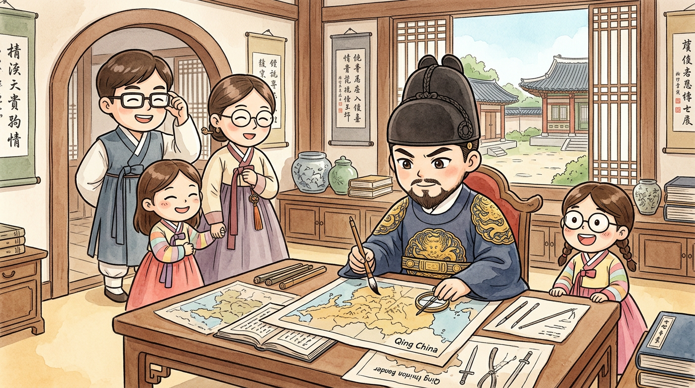
청나라에서 돌아온 효종 - 북벌의 꿈을 품다
병자호란(丙子胡亂): 1636년(병자년)에 청나라(오랑캐=胡)가 일으킨 전란. 조선이 청나라에 항복한 치욕적인 사건이에요.
삼배구고두례(三拜九叩頭禮): 세 번 절하고 아홉 번 이마를 땅에 조아리는 의식. 완전한 복종을 의미해요.
북벌론(北伐論): 북쪽의 청나라를 쳐서 병자호란의 치욕을 갚자는 주장이에요.
봉림대군은 청나라에서 8년간 인질 생활을 했어요. 그동안 그는 청나라의 군사력을 직접 보고, 조선이 왜 졌는지 뼈저리게 느꼈답니다.
1649년, 봉림대군은 형 소현세자가 의문의 죽음을 당한 뒤 왕위에 올랐어요. 이 사람이 바로 효종이에요. 효종은 왕이 되자마자 마음속 깊이 품고 있던 꿈을 실행에 옮기기 시작했어요.
"반드시 청나라를 쳐서 병자호란의 치욕을 갚겠다!"
이것이 바로 북벌론(北伐論)이에요. 효종은 단순히 복수만 하려던 것이 아니에요. 명나라(중국의 이전 왕조)가 임진왜란 때 조선을 도와준 은혜를 갚고, 오랑캐(청나라)에게 빼앗긴 문명의 자존심을 되찾으려 했답니다.
효종은 북벌을 위해 군대를 강하게 만들기 시작했어요.
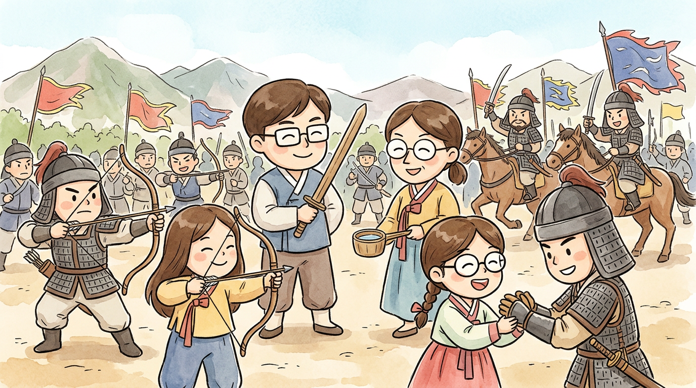
효종의 군사 훈련 - 북벌을 꿈꾸며 군대를 강화하다
첫째, 어영청의 군사를 크게 늘렸어요. 1만 명이던 군사를 2만 명 이상으로 확충했답니다.
둘째, 성곽을 고치고 무기를 새로 만들었어요. 특히 화포(대포)를 많이 만들었답니다.
셋째, 이완 장군을 북벌의 핵심 인물로 삼아 군사 훈련을 강화했어요.
넷째, 나선정벌(러시아 원정)에 조선군을 파견하여 실전 경험을 쌓게 했어요.
특히 이완 장군은 효종의 북벌 계획에서 가장 중요한 인물이었어요. 이완은 뛰어난 장수로, 밤낮으로 군사 훈련에 힘썼답니다. 효종과 이완은 마치 한 마음 한 뜻처럼 북벌을 준비했어요.
효종의 북벌론을 가장 열렬히 지지한 학자가 바로 송시열이에요. 송시열은 조선 후기 최고의 유학자 중 한 명으로, "대의명분"을 무엇보다 중요하게 생각했어요.
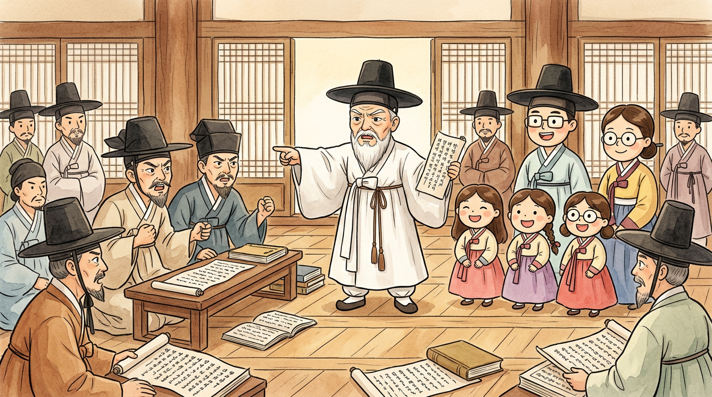
송시열 - 북벌론을 지지한 조선 최고의 유학자
송시열은 효종에게 이렇게 말했어요.
"전하, 우리는 오랑캐에게 당한 치욕을 반드시 갚아야 합니다. 이것은 조선의 의리이며, 하늘의 뜻입니다!"
하지만 모든 신하가 북벌에 찬성한 것은 아니에요. 현실적인 문제를 지적하는 사람들도 많았답니다.
"청나라는 중국 전체를 지배하는 강대국입니다. 조선의 힘으로는 어림도 없습니다."
"전쟁보다 먼저 백성의 삶을 안정시키는 것이 급합니다."
이렇게 북벌을 주장하는 주전론과 현실을 걱정하는 신중론 사이에서 논쟁이 계속되었어요.
효종은 치욕을 갚기 위해 전쟁을 준비했어요. 하지만 전쟁을 하면 백성들이 고통받을 수도 있어요. 여러분이 효종이라면, 북벌을 추진했을까요? 아니면 평화를 선택했을까요?
안타깝게도 효종의 북벌은 실현되지 못했어요. 그 이유는 여러 가지가 있답니다.
첫째, 청나라가 너무 강했어요. 청나라는 중국 전체를 통일하고 점점 더 안정되어 갔는데, 조선의 국력은 이에 비할 바가 못 되었답니다.
둘째, 조선의 경제 사정이 어려웠어요. 임진왜란과 병자호란을 연이어 겪으면서 나라가 매우 가난해져 있었거든요.
셋째, 1659년 효종이 갑자기 세상을 떠났어요. 효종은 재위 10년 만에 41세의 젊은 나이로 돌아가셨답니다. 북벌의 중심이었던 효종이 사라지자, 북벌 계획도 함께 사라졌어요.
효종의 죽음 이후, 북벌론은 점차 현실에서 멀어지고 명분론으로만 남게 되었어요. 하지만 효종의 북벌 의지는 조선 사람들에게 "치욕을 잊지 말자"는 정신적 각성을 일깨워 주었답니다.
효종 때 조선군은 청나라의 요청으로 두 차례나 나선정벌(러시아 원정)에 참여했어요. 조선의 조총 부대가 러시아군과 싸운 거예요! 유럽 군대와 싸운 최초의 한국 군대라고 할 수 있답니다. 이 경험은 실전 훈련으로도 큰 도움이 되었어요.
효종은 병자호란의 치욕을 갚기 위해 북벌을 준비했어요. '치욕을 갚는 것'과 '평화롭게 지내는 것' 중 무엇이 더 중요할까요? 그 이유는?
둘 다 중요한 가치예요. 효종의 입장에서는 나라의 자존심을 지키는 것이 왕의 의무였어요. 하지만 전쟁은 많은 백성을 희생시킬 수 있어요. 가장 좋은 방법은 나라의 힘을 키우면서도 불필요한 전쟁은 피하는 것이에요. 오늘날에도 국방은 중요하지만, 외교와 대화로 평화를 유지하는 것이 더 현명한 방법이랍니다.
송시열은 '대의명분'을 중요하게 여겼고, 다른 신하들은 '현실'을 걱정했어요. 이상(꿈)과 현실 사이에서 어떻게 균형을 잡아야 할까요?
이상만 쫓으면 현실에서 실패하고, 현실만 보면 발전이 없어요. 중요한 것은 이상을 가지되, 현실적인 단계를 밟아가는 거예요. 효종도 갑자기 전쟁을 일으킨 것이 아니라 군대를 키우며 차근차근 준비했어요. 여러분도 큰 꿈을 가지면서, 매일 조금씩 노력하는 것이 가장 좋은 방법이랍니다.
효종은 청나라에서 8년간 인질 생활을 했어요. 이 힘든 경험이 오히려 효종을 어떤 왕으로 만들었을까요? 어려운 경험이 사람을 성장시킨 예를 들어보세요.
효종은 인질 시절 청나라의 강한 군사력을 직접 눈으로 보면서, 조선이 왜 졌는지 깨달았어요. 이 경험이 없었다면 북벌을 추진할 생각도, 군대를 어떻게 키워야 하는지도 몰랐을 거예요. 어려운 경험은 힘들지만, 그 속에서 배운 것들이 미래를 바꿀 수 있어요. 넘어져 본 사람이 다시 일어나는 방법을 알듯이, 실패와 고통도 소중한 교훈이 될 수 있답니다.
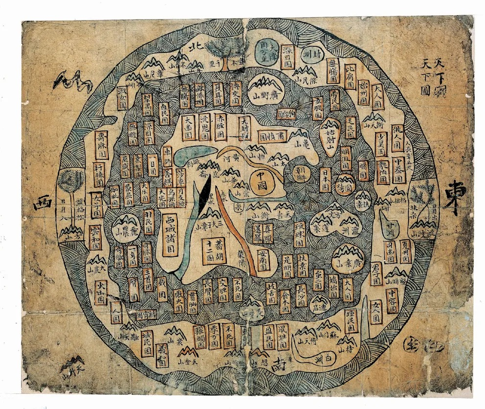
조선 시대 세계지도 (천하도) — 조선 후기 사람들이 그린 세계의 모습 (출처: Wikimedia Commons)
조선 후기, 나라를 가장 병들게 한 것은 바로 당쟁(黨爭)이에요. 당쟁이란 여러 정치 집단(붕당)이 서로 권력을 차지하려고 싸우는 것을 말해요.
처음에 붕당은 나쁜 것이 아니었어요. 서로 다른 의견을 가진 집단이 토론하며 더 좋은 정치를 만드는 것은 좋은 일이니까요. 하지만 시간이 지나면서 붕당은 점점 심해졌어요.
조선의 주요 붕당에는 노론, 소론, 남인, 북인이 있었어요. 이들은 상대 당파의 사람을 모조리 쫓아내거나 심지어 죽이기까지 했답니다. 한 당파가 권력을 잡으면 반대파를 역적으로 몰아 처형하는 환국(換局)과 사화(士禍)가 반복되었어요.
이렇게 신하들이 나라를 위해 일하기보다 자기 당파의 이익만 챙기니, 백성들의 삶은 점점 어려워졌답니다.
붕당(朋黨): 같은 정치적 의견을 가진 사람들의 모임. 오늘날의 정당과 비슷하지만, 당시에는 더 심하게 대립했어요.
탕평(蕩平): 모든 당파를 고르게 등용하여 정치적 균형을 맞추는 것. '공평하게 고른다'는 뜻이에요.
환국(換局): 한 붕당이 쫓겨나고 다른 붕당이 권력을 잡는 것. 정치판이 완전히 뒤바뀌는 거예요.
1724년, 왕위에 오른 영조는 이 당쟁의 폐해를 뼈저리게 알고 있었어요. 영조 자신도 당쟁의 피해자였거든요.
영조는 숙종의 아들이지만 어머니가 궁녀 출신(무수리)이라는 이유로 늘 무시를 당했어요. 게다가 왕위에 오른 뒤에도 "영조는 형(경종)을 독살하고 왕이 되었다"는 소문이 끊이지 않아 평생 괴로워했답니다.
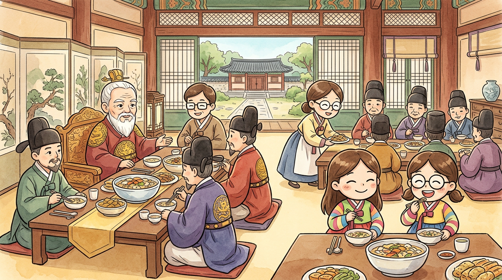
영조의 탕평책 - 모든 당파를 고르게 등용하다
영조는 당쟁을 없애기 위해 탕평책(蕩平策)을 실시했어요. 탕평이란 "치우치지 않고 고르게 한다"는 뜻이에요.
첫째, 관직에 사람을 뽑을 때 노론, 소론, 남인 등 모든 당파에서 골고루 뽑았어요.
둘째, 성균관(대학) 앞에 탕평비를 세워 "당파에 치우치지 말라"는 뜻을 새겼어요.
셋째, 특정 당파가 독점하던 관직을 폐지하거나 바꾸었어요.
넷째, 탕평의 의지를 보이기 위해 탕평채라는 음식까지 만들었어요! 여러 나물을 섞어 비빈 것으로, "모든 것을 골고루 섞는다"는 상징이었답니다.
영조의 탕평책은 상당한 성과를 거두었어요. 한쪽 당파가 정치를 독점하는 일이 줄어들고, 다양한 인재가 관직에 진출할 수 있었답니다.
영조에게는 큰 슬픔이 있었어요. 바로 아들 사도세자와의 비극이에요. 이것은 조선 역사에서 가장 슬프고 충격적인 사건 중 하나랍니다.
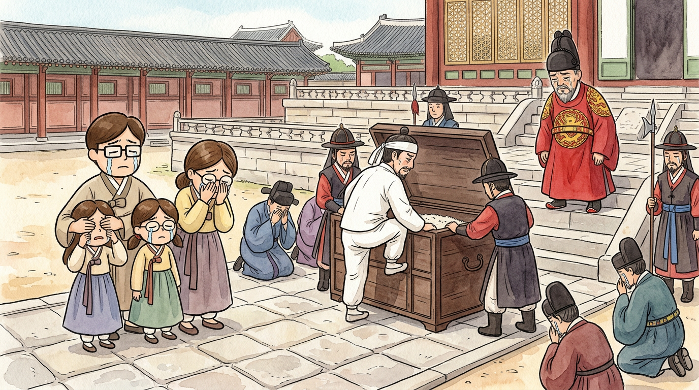
사도세자의 비극 - 뒤주에 갇힌 왕의 아들
사도세자는 어릴 때 총명하고 재주가 많은 아이였어요. 그림도 잘 그리고, 무예도 뛰어났답니다. 하지만 아버지 영조와의 관계는 점점 나빠져 갔어요.
영조는 세자에게 너무 엄격했어요. 공부를 완벽하게 해야 하고, 행동도 완벽해야 한다고 요구했답니다. 세자가 조금이라도 실수하면 크게 꾸짖었어요.
점점 압박에 시달린 사도세자는 마음의 병이 깊어졌어요. 이상한 행동을 하기 시작했고, 결국 심각한 문제를 일으키게 되었답니다.
당파 싸움도 이 비극을 부추겼어요. 노론은 사도세자를 반대했고, 세자를 둘러싼 정치적 갈등이 부자 관계를 더욱 악화시켰답니다.
1762년, 영조는 끔찍한 결정을 내렸어요. 사도세자를 뒤주(쌀을 담는 큰 나무 궤짝) 속에 가두라고 명령한 거예요. 사도세자는 한여름 뒤주 속에서 8일 만에 숨을 거두었답니다. 아버지가 아들을 죽인 이 사건은 조선 역사상 가장 비극적인 사건으로 기록되었어요.
사도세자의 부인 혜경궁 홍씨는 한중록(閑中錄)이라는 자서전을 남겼어요. 남편이 뒤주에서 죽는 것을 직접 목격한 경험 등을 기록한 이 책은, 궁중의 비극을 생생하게 전해주는 소중한 역사 자료예요. 한중록은 조선시대 최고의 문학작품 중 하나로 평가받기도 한답니다.
사도세자의 비극에도 불구하고, 영조는 조선 역사상 가장 오래 재위한 왕(52년!)으로서 많은 개혁을 이루었어요.
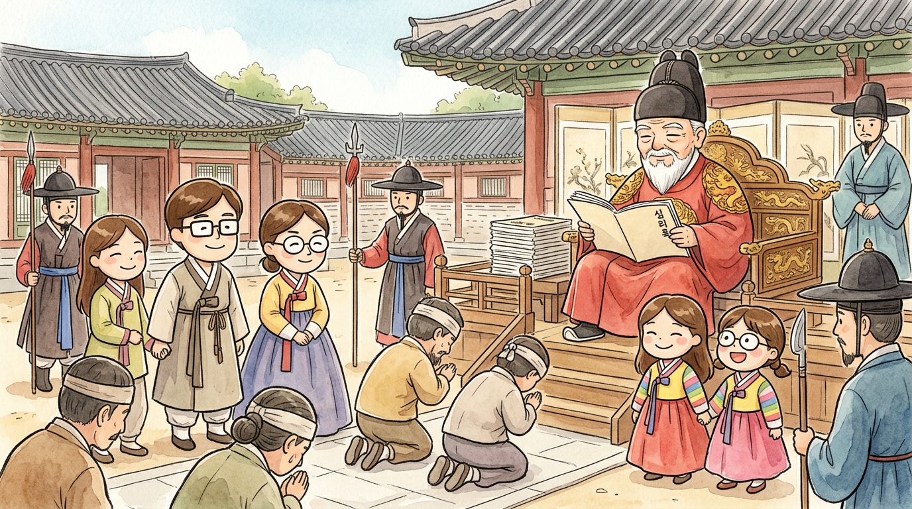
영조의 개혁 - 균역법 실시와 백성을 위한 정치
균역법(均役法): 백성들이 군대에 가는 대신 내던 군포(세금)를 2필에서 1필로 줄여주었어요. 백성의 부담을 반으로 줄인 거예요!
신문고 부활: 억울한 일을 당한 백성이 직접 왕에게 호소할 수 있는 신문고 제도를 되살렸어요.
속대전 편찬: 나라의 법전을 새로 정리하여 법치를 강화했어요.
청계천 준설: 서울의 청계천을 깨끗이 정비하여 홍수 피해를 줄였어요.
영조는 82세까지 살며 52년간 왕위에 있었어요. 이것은 조선 역대 왕 중 가장 긴 재위 기간이에요. 비록 사도세자의 비극이라는 큰 아픔이 있었지만, 탕평책과 균역법 등 많은 개혁을 통해 조선을 안정시킨 위대한 왕이었답니다.
영조는 좋은 정치를 펼친 왕이지만, 아들을 죽인 아버지이기도 해요. 한 사람을 평가할 때 좋은 점과 나쁜 점을 어떻게 함께 볼 수 있을까요?
당쟁은 처음에는 서로 다른 의견을 나누는 좋은 것이었지만, 나중에는 나라를 병들게 했어요. 서로 의견이 다를 때 싸우지 않고 좋은 결과를 만들려면 어떻게 해야 할까요?
의견이 다르더라도 상대방의 말을 끝까지 듣고, 공통점을 찾는 노력이 필요해요. 붕당정치가 나빠진 이유는 상대의 의견을 인정하지 않고 무조건 틀렸다고 했기 때문이에요. 오늘날 민주주의에서도 여당과 야당이 있지만, 서로 토론하고 타협하여 좋은 법을 만드는 것이 중요해요. 의견이 다른 것은 자연스러운 일이지만, 그 의견을 어떻게 나누느냐가 중요하답니다.
영조와 사도세자의 비극은 아버지의 지나친 기대와 아들의 고통에서 비롯되었어요. 부모가 자녀에게 기대하는 것과 자녀의 마음 사이에서 어떻게 균형을 찾을 수 있을까요?
부모의 기대는 자녀를 사랑하기 때문이지만, 너무 큰 기대는 오히려 아이를 힘들게 해요. 영조는 세자가 완벽하기를 바랐지만, 그 압박이 세자를 망가뜨렸어요. 중요한 것은 서로 대화하고, 아이의 마음을 들어보는 거예요. 잘하는 것을 칭찬하고, 못하는 것은 함께 도와주는 것이 좋아요. 부모와 이야기하기 어려울 때는 편지를 써보는 것도 좋은 방법이랍니다.
영조는 '탕평채'라는 음식으로 탕평의 뜻을 전했어요. 음식이나 문화로 중요한 메시지를 전할 수 있을까요? 비슷한 예를 생각해 보세요.
음식이나 문화는 사람들에게 쉽게 메시지를 전하는 좋은 방법이에요. 영조의 탕평채처럼, 설날에 먹는 떡국은 '한 살 더 먹는다'는 의미가 있고, 추석의 송편은 가족의 화목을 상징해요. 오늘날에도 올림픽은 평화의 메시지를 전하고, K-pop은 한국 문화를 세계에 알리는 역할을 하고 있답니다.
사도세자의 아들, 정조가 1776년에 왕위에 올랐어요. 정조는 11살 때 아버지가 뒤주에 갇혀 죽는 것을 눈앞에서 지켜봐야 했답니다. 이 끔찍한 기억은 정조의 마음에 평생 깊은 상처로 남았어요.
정조가 왕이 되는 길은 순탄하지 않았어요. 아버지를 죽게 만든 노론 세력이 정조가 왕이 되는 것을 막으려 했거든요. 심지어 정조를 암살하려는 시도까지 있었답니다!
하지만 정조는 할아버지 영조의 보호 아래 무사히 자랐고, 마침내 왕위에 올랐어요. 왕이 된 정조가 처음으로 한 말은 이것이었어요.
"나는 사도세자의 아들이다!"
이 한마디에 조정은 깜짝 놀랐어요. 아버지의 이름조차 꺼내기 어려운 분위기였는데, 정조가 당당하게 선언한 거예요. 정조는 아버지의 명예를 회복하고, 아버지를 죽게 만든 세력을 견제하겠다는 강한 의지를 보인 거랍니다.
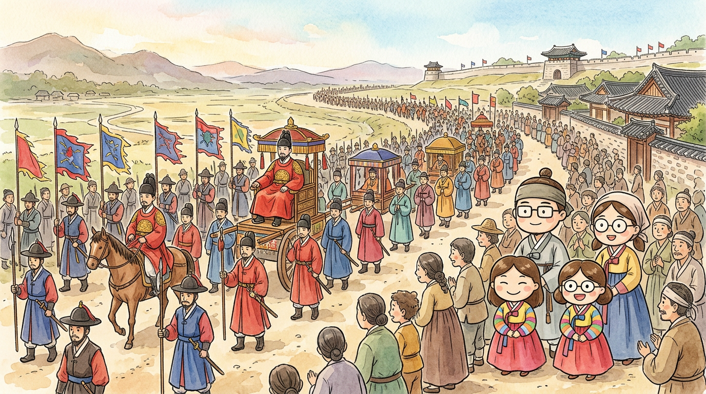
정조 - 조선의 르네상스를 이끈 개혁 군주
규장각(奎章閣): 정조가 만든 왕실 도서관 겸 학술 연구 기관. 뛰어난 인재들을 모아 학문을 연구하고 국정을 논의했어요.
장용영(壯勇營): 정조가 만든 왕의 호위 군대. 왕권을 강화하기 위한 군사 조직이에요.
거중기(擧重機): 정약용이 설계한 무거운 물건을 들어올리는 기계. 수원 화성 건축에 사용되었어요.
정조는 탕평책을 이어받으면서도, 더 적극적인 방법을 사용했어요. 바로 규장각(奎章閣)을 설립한 거예요.
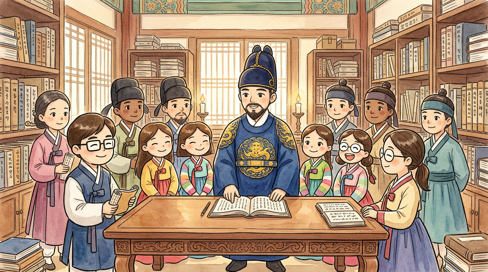
규장각 - 정조가 설립한 학술 연구 기관
규장각은 원래 왕실의 글과 그림을 보관하는 도서관이었어요. 하지만 정조는 이곳을 최고의 인재들이 모여 학문을 연구하고 나라의 정책을 만드는 곳으로 바꾸었답니다.
정조는 규장각에 초계문신제를 실시했어요. 37세 이하의 젊고 유능한 관리들을 뽑아 규장각에서 공부하게 한 거예요. 이들은 당파에 관계없이 실력으로 뽑혔어요.
정조는 밤늦게까지 규장각에서 신하들과 토론했어요. 직접 시험 문제를 내고, 답안을 읽고, 평가까지 했답니다. 심지어 신하들에게 간식까지 보내주며 공부를 격려했어요. 정조 자신도 엄청난 독서가로, 하루에 수십 권의 책을 읽었다고 해요!
규장각에서 성장한 대표적인 인재가 바로 정약용, 박제가, 이덕무, 유득공 같은 학자들이에요. 이들은 신분이 낮거나 서얼(첩의 자식) 출신이었지만, 정조는 실력만 보고 등용했답니다.
정조 시대를 빛낸 최고의 학자를 꼽으라면 단연 정약용(丁若鏞)이에요. 정약용은 실학(실용적 학문)의 집대성자로, 정치, 경제, 과학, 기술 등 모든 분야에서 뛰어난 업적을 남겼답니다.
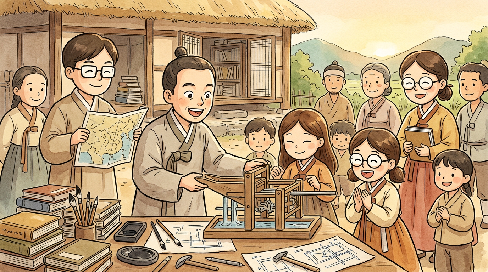
정약용과 거중기 - 과학의 힘으로 화성을 짓다
정약용의 가장 유명한 발명품 중 하나가 거중기(擧重機)예요. 거중기는 도르래의 원리를 이용하여 무거운 돌을 쉽게 들어올리는 기계예요. 적은 힘으로 큰 돌을 옮길 수 있어서 수원 화성 건축에 크게 도움이 되었답니다.
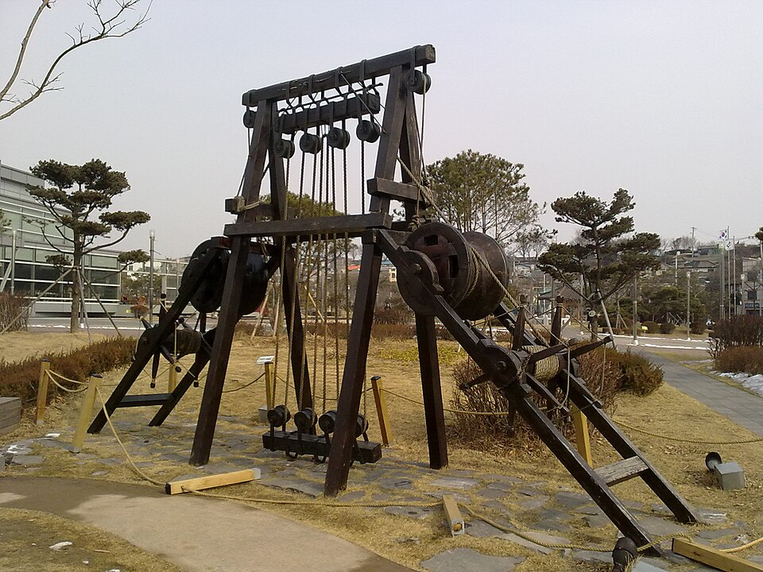
거중기 (擧重機) — 도르래 원리로 무거운 돌을 들어올리는 기계
정약용은 평생 500권이 넘는 책을 썼어요! 목민심서(지방 관리의 마음가짐), 경세유표(나라를 다스리는 방법), 흠흠신서(재판을 공정하게 하는 방법) 등 다양한 분야의 책을 저술했답니다. 오늘날로 치면 정치학, 경제학, 법학, 공학을 모두 공부한 천재인 셈이에요!
정조의 가장 위대한 업적 중 하나가 바로 수원 화성(華城) 건축이에요. 이것은 단순한 성이 아니라, 정조의 큰 꿈이 담긴 도시 건설 프로젝트였답니다.
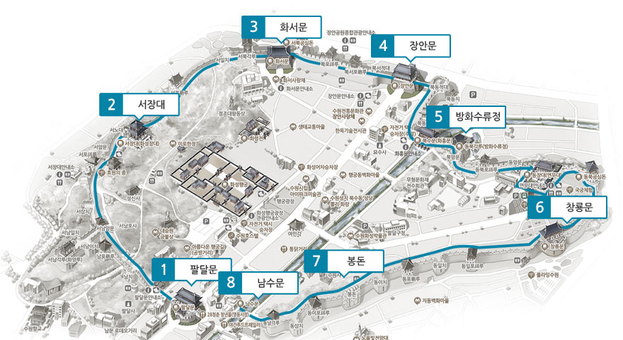
수원 화성 평면도 — 성곽의 구조와 주요 시설 (출처: Wikimedia Commons)
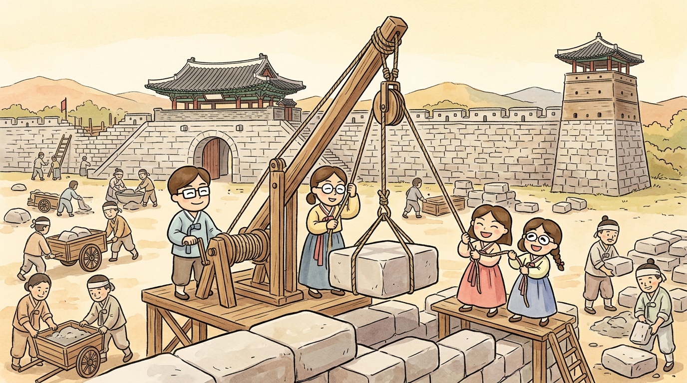
수원 화성 - 정조의 꿈이 담긴 유네스코 세계유산
정조가 화성을 지은 이유는 여러 가지예요.
첫째, 아버지 사도세자의 무덤을 수원(화산)으로 옮기고, 그 곁에 새로운 도시를 만들어 아버지를 기리려 했어요.
둘째, 노론이 장악한 한양(서울)을 벗어나 새로운 정치 기반을 만들려 했어요. 수원을 제2의 수도로 만들 계획이었답니다.
셋째, 상업 도시를 건설하여 백성들이 장사로 부자가 될 수 있게 하려 했어요.
화성은 동서양의 기술을 합친 최첨단 성이었어요!
공심돈: 안이 비어 있는 돌출 망루로, 적을 감시하면서 공격할 수 있었어요.
노대: 커다란 쇠뇌(화살 발사기)를 올려놓는 시설이에요.
봉돈: 봉화를 올려 멀리까지 신호를 보내는 시설이에요.
수문: 성 안으로 물이 흐르도록 만든 수로 시설이에요.
정약용의 거중기 덕분에 공사 기간도 크게 단축되었어요. 원래 10년 걸릴 공사를 2년 9개월 만에 완성했답니다!
수원 화성은 1997년 유네스코 세계문화유산으로 등재되었어요. 전통과 과학이 조화를 이룬 뛰어난 건축물로 세계적으로 인정받은 거예요.
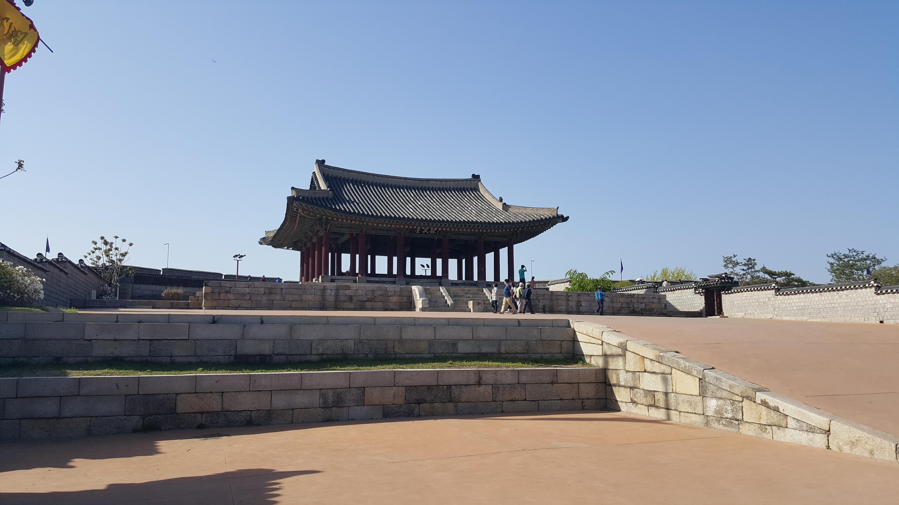
수원 화성 실물 사진 — 1997년 유네스코 세계문화유산 등재 (출처: Wikimedia Commons)
정조는 조선의 르네상스를 이끈 위대한 왕이었지만, 1800년에 갑자기 세상을 떠났어요. 겨우 49세의 나이였답니다.
정조의 갑작스러운 죽음은 여전히 미스터리예요. 일부 학자들은 독살되었을 수 있다고 주장하기도 해요. 정조가 죽자 그의 개혁은 대부분 중단되었고, 조선은 다시 어두운 시대로 접어들었답니다.
정조는 뛰어난 왕이었지만 일찍 세상을 떠났어요. 만약 정조가 더 오래 살았다면 조선은 어떻게 달라졌을까요?
정조는 아버지 사도세자의 명예를 회복하기 위해 평생 노력했어요. 가족을 위해 노력하는 것이 왜 중요할까요? 여러분이 가족을 위해 할 수 있는 일은 무엇이 있을까요?
가족은 우리의 뿌리예요. 정조가 아버지의 명예를 지키려 한 것은 가족에 대한 사랑과 존경의 표현이었어요. 우리도 가족을 위해 할 수 있는 일이 많아요. 부모님께 감사의 마음을 표현하고, 형제자매와 사이좋게 지내고, 가족의 어려움을 함께 나누는 것이 모두 소중한 일이에요.
정조는 신분이 낮은 사람도 실력이 있으면 등용했어요. 사람의 능력은 태어난 환경과 관계없다는 것을 보여주는 예를 생각해 보세요.
정약용, 박제가, 이덕무 같은 사람들은 신분이 낮았지만 역사에 이름을 남긴 위대한 학자가 되었어요. 오늘날에도 어려운 환경에서 자랐지만 노력으로 큰 성과를 이룬 사람들이 많아요. 중요한 것은 어디서 태어났느냐가 아니라, 얼마나 노력하고 배우느냐예요. 모든 사람에게 공평한 기회를 주는 사회가 되어야 한답니다.
수원 화성은 전통 기술과 새로운 과학 기술을 함께 사용하여 지었어요. 옛것과 새것을 조화시키는 것이 왜 중요할까요?
옛것에는 오랜 경험과 지혜가 담겨 있고, 새것에는 효율과 발전이 있어요. 화성은 전통 성곽의 아름다움과 과학 기술의 효율성을 합쳐서 더 훌륭한 결과를 만들어냈어요. 오늘날에도 한옥에 현대 기술을 적용하거나, 전통 음악에 현대적 편곡을 더하는 것처럼, 옛것과 새것을 잘 조화시키면 더 좋은 것을 만들 수 있답니다.
조선 후기, 많은 학자들이 기존의 학문에 불만을 품기 시작했어요. 당시 조선의 주류 학문인 성리학은 "우주의 원리가 무엇인가?", "예법은 어떻게 해야 하는가?" 같은 이론적인 문제에만 몰두하고 있었거든요.
하지만 백성들의 현실은 어떠했을까요? 농민들은 가난에 허덕이고, 세금은 부당하고, 기술은 뒤처져 있었어요. 학자들이 하늘의 이치만 논하는 동안 백성들은 땅 위에서 굶주리고 있었던 거예요.
이런 상황에서 "진짜 쓸모 있는 학문을 하자!"고 외친 학자들이 나타났어요. 이들이 바로 실학자(實學者)들이에요.
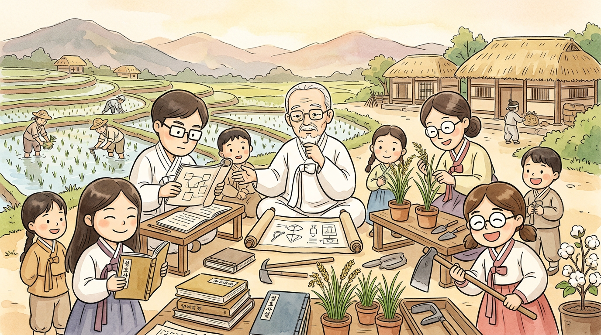
실학의 탄생 - 백성의 삶을 위한 학문
실학(實學): '실제로 쓸모 있는 학문'이라는 뜻. 농업, 상업, 기술, 지리 등 현실 생활에 도움이 되는 것을 연구했어요.
성리학(性理學): 우주의 원리와 인간의 도리를 탐구하는 유교 철학. 조선의 공식 학문이었어요.
이용후생(利用厚生): "편리한 것을 이용하여 백성의 삶을 풍요롭게 한다"는 뜻. 실학의 핵심 목표예요.
실학의 중요한 선구자 중 한 명이 이익(李瀷)이에요. 이익은 경기도 안산에서 평생 학문에 몰두한 학자예요.
이익이 가장 관심을 가진 것은 토지 문제였어요. 당시 조선은 양반과 권세가가 대부분의 땅을 차지하고, 농민들은 자기 땅 없이 남의 땅을 빌려 농사짓는 소작농이 대부분이었어요.
이익은 한전론(限田論)을 주장했어요. 한 사람이 가질 수 있는 땅의 크기를 제한하여, 모든 농민이 최소한의 땅을 가질 수 있게 하자는 거예요. 지금으로 치면 부동산 소유를 제한하는 것과 비슷한 생각이에요!
이익은 또한 성호사설(星湖僿說)이라는 백과사전 같은 책을 썼어요. 천문, 지리, 역사, 경제, 의학 등 온갖 분야의 지식을 모아 정리한 책이에요. 이익의 제자들은 성호학파를 이루어 실학을 더욱 발전시켰답니다.
이익은 형이 당쟁에 휘말려 죽는 것을 보고 벼슬을 포기하고 학문에만 전념했어요. 평생 가난하게 살면서도 제자들을 가르치고 책을 썼답니다. "가난한 선비의 부자 학문"이라고 할 수 있어요!
박지원(朴趾源)은 실학자이면서 동시에 조선 최고의 소설가이기도 해요. 박지원은 양반이면서도 양반 사회를 날카롭게 비판한 독특한 인물이랍니다.
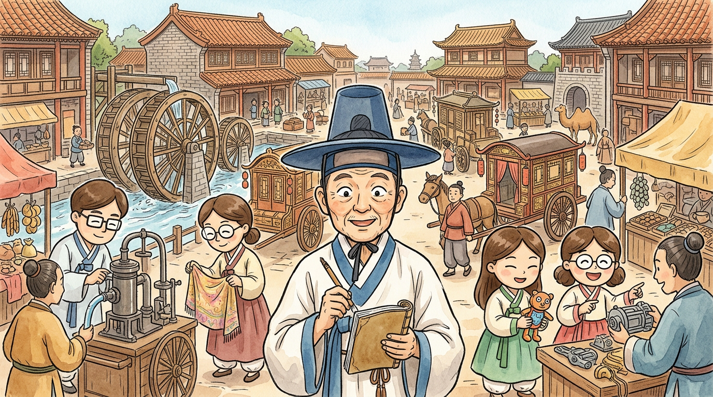
박지원의 열하일기 - 중국에서 배운 것을 기록하다
1780년, 박지원은 청나라 사신단을 따라 중국의 수도 베이징과 열하(청나라 황제의 여름 궁전)를 방문했어요. 그리고 이 여행을 기록한 것이 바로 유명한 열하일기(熱河日記)예요.
박지원은 중국에서 발달한 수레, 벽돌, 다리, 상업 시설 등을 보고 깜짝 놀랐어요.
"청나라가 오랑캐라고? 이렇게 발전한 나라를 오랑캐라고 무시하다니, 우리가 더 부끄러운 것 아닌가!"
박지원은 조선이 청나라를 무시만 할 것이 아니라, 좋은 것은 배워야 한다고 주장했어요. 이것을 북학(北學, 북쪽에서 배우자)이라고 해요.
허생전(許生傳): 가난한 선비 허생이 장사로 큰돈을 벌어 양반 사회의 모순을 꼬집는 이야기. "양반은 장사를 하면 안 된다"는 편견을 비판했어요.
양반전(兩班傳): 가난한 양반이 양반 신분을 팔려 하는 이야기. 양반이라는 신분이 얼마나 우스운 것인지 풍자했어요.
호질(虎叱): 호랑이가 위선적인 양반 학자를 꾸짖는 이야기. 호랑이의 입을 빌려 양반의 위선을 통렬하게 비판했어요.
김정호(金正浩)는 조선 최고의 지리학자이자 지도 제작자예요. 김정호의 가장 위대한 업적은 바로 대동여지도(大東輿地圖)를 완성한 것이에요. 대동여지도는 한 사람이 홀로 전국을 걸어 다니며 만든 지도가 아니에요. 이것은 정부 주도의 체계적인 측량 자료 집대성 프로젝트였답니다!
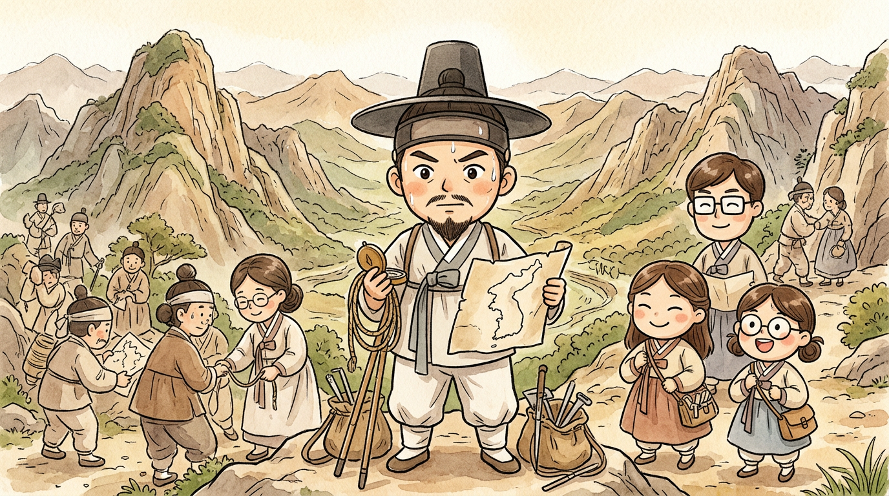
김정호 - 정부 측량 자료를 집대성하여 대동여지도를 완성하다
대동여지도는 한반도 전체를 아주 정밀하게 그린 지도예요. 산, 강, 도로, 마을 등이 상세하게 표시되어 있어서, 오늘날의 지도와 비교해도 놀라울 정도로 정확하답니다.
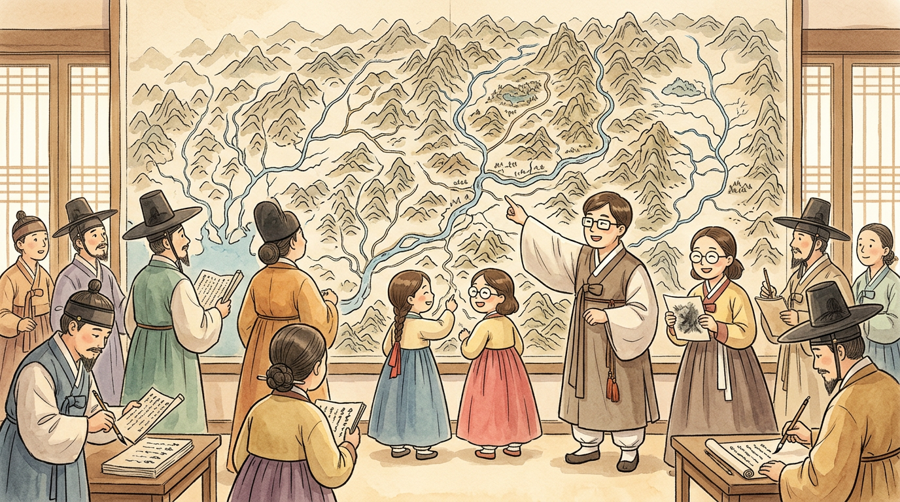
대동여지도 - 한반도를 담은 놀라운 지도
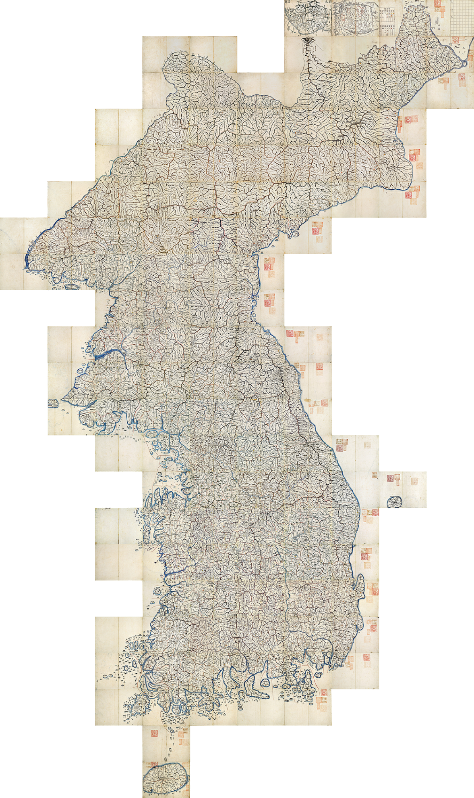
대동여지도 전체 — 22첩으로 나뉜 한반도 지도, 국립중앙박물관 소장 (출처: Wikimedia Commons)
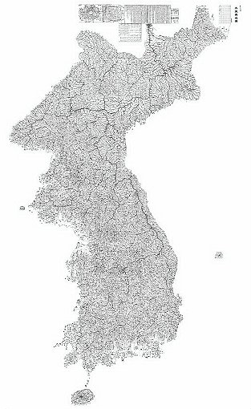
대동여지도 책자 구성 — 22첩으로 나뉘어 접었다 펼 수 있어요 (출처: Wikimedia Commons)
크기: 남북 6.6m, 동서 3.8m의 거대한 지도예요! 22장의 책으로 나누어 접을 수 있게 만들었답니다.
정확성: GPS도 없던 시대에 실제 지형과 거의 일치하는 놀라운 정확도를 보여요.
실용성: 10리마다 점을 찍어 거리를 쉽게 알 수 있고, 기호를 사용하여 산성, 역참, 봉수대 등을 표시했어요.
인쇄 기술: 목판으로 제작하여 여러 장을 찍어낼 수 있었어요. 한 장뿐인 지도가 아니라 많이 만들어 널리 쓸 수 있게 한 거예요!
"김정호가 조선 팔도를 직접 걸어 다니며 지도를 만들었다"는 이야기는 사실이 아니에요. 이것은 나중에 만들어진 신화랍니다!
대동여지도의 진짜 비밀은 이거예요. 조선 정부는 오랜 세월 동안 전국 각지를 직접 측량하고 그 결과를 기록으로 남겼어요. 김정호는 이 방대한 정부 측량 자료를 모두 모아서 꼼꼼히 비교하고 정리했답니다. 요즘으로 말하면 전국의 데이터를 한곳에 모아 분석하는 '빅데이터 프로젝트'였던 거예요!
게다가 김정호는 목판 인쇄 기술을 활용해 지도를 여러 장 찍어낼 수 있도록 만들었어요. 한 장뿐인 귀한 지도가 아니라, 필요한 사람이라면 누구나 가질 수 있는 실용적인 지도를 만든 거예요. 22장으로 나눠 접었다 폈다 할 수 있어서 휴대하기도 편리했답니다!
대동여지도 원본은 지금도 국립중앙박물관에 소장되어 있어요. 서울에 가면 직접 눈으로 볼 수 있답니다. 얼마나 정교한지, GPS도 없던 시대에 만든 지도라고는 믿기 어려울 정도예요!
농업: 홍만선의 산림경제 - 농사, 음식, 건강 등 시골 생활의 모든 것을 담은 백과사전.
의학: 정약용의 마과회통 - 천연두(마마) 치료법을 정리한 의학서.
상업: 박제가의 북학의 - 청나라의 발전된 상업과 기술을 배우자고 주장한 책.
역사: 유득공의 발해고 - 발해의 역사를 처음으로 체계적으로 정리한 책.
실학자들은 "쓸모 있는 학문을 하자"고 주장했어요. 여러분이 생각하기에 지금 시대에 가장 "쓸모 있는 학문"은 무엇일까요?
실학자들은 기존 학문이 현실과 동떨어져 있다고 비판했어요. 오늘날 학교에서 배우는 것 중에서 '현실에 더 필요한 공부'가 있다면 무엇일까요?
이것은 사람마다 다를 수 있어요. 어떤 사람은 경제 교육(용돈 관리, 저축)이 필요하다고 하고, 어떤 사람은 코딩이나 미디어 리터러시(가짜 뉴스 구별법)가 중요하다고 해요. 실학자들처럼 '왜 이것을 배우는가?'를 항상 생각하는 자세가 중요해요. 학교에서 배우는 기본 지식도 중요하지만, 그것을 실생활에 어떻게 적용할지 생각하는 것이 더 중요하답니다.
박지원은 '적(청나라)의 좋은 점도 배워야 한다'고 했어요. 나와 사이가 좋지 않은 사람에게서도 배울 점이 있을까요?
물론이에요! 박지원은 조선이 청나라를 오랑캐라고 무시하면서 아무것도 배우지 않는 것이 더 큰 문제라고 봤어요. 마찬가지로 우리와 사이가 좋지 않은 사람도 잘하는 것이 있을 수 있어요. 중요한 것은 편견 없이 좋은 점은 인정하고 배우는 자세예요. 이것이 진정한 성장이랍니다.
김정호는 22년이라는 긴 세월 동안 대동여지도를 완성했어요. 오랜 시간 포기하지 않고 한 가지 일을 해내는 힘은 어디서 나올까요?
김정호가 포기하지 않을 수 있었던 것은, 자신이 하는 일의 가치를 믿었기 때문이에요. '좋은 지도가 있으면 나라와 백성에게 큰 도움이 된다'는 확신이 있었기에 22년을 버틸 수 있었어요. 여러분도 '왜 이것을 하는가'에 대한 답을 알면, 어려워도 포기하지 않을 수 있어요. 작은 목표부터 세우고 하나씩 달성하는 습관을 들이면, 큰 일도 해낼 수 있답니다.
정조가 세상을 떠난 뒤, 조선은 가장 어두운 시대로 접어들었어요. 정조의 뒤를 이은 순조는 겨우 11살의 어린 나이로 왕이 되었답니다. 어린 왕이 나라를 다스릴 수 없으니, 왕의 외가 집안이 대신 권력을 잡게 되었어요.
이것이 바로 세도정치(勢道政治)예요. 세도정치란 왕의 외척(어머니나 왕비 쪽 친척) 한두 가문이 나라의 모든 권력을 독점하는 것을 말해요.
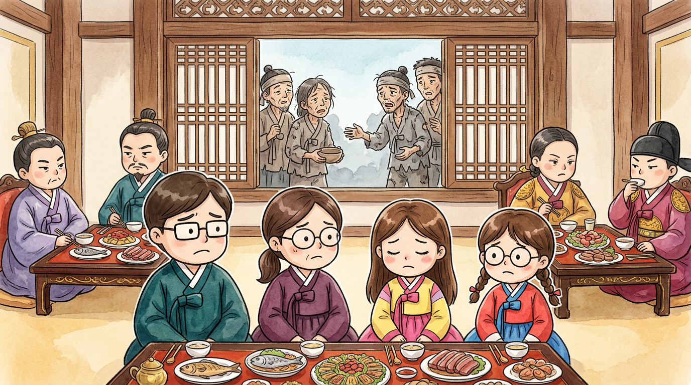
세도정치 - 특정 가문이 권력을 독점하다
순조 때는 안동 김씨, 헌종 때는 풍양 조씨, 철종 때는 다시 안동 김씨가 세도를 잡았어요. 이 가문들은 모든 관직을 자기 사람으로 채우고, 나라의 재산을 마음대로 사용했답니다.
세도 가문은 관직을 돈으로 팔았어요. 벼슬을 사고파는 것을 매관매직이라 해요. 돈을 내고 관리가 된 사람들은 투자한 돈을 되찾기 위해 백성에게서 더 많은 세금을 걷었답니다. 이렇게 부패가 꼬리에 꼬리를 물었어요.
세도정치(勢道政治): 특정 가문(주로 왕의 외척)이 권력을 독점하는 정치. 약 60년간 계속되었어요.
매관매직(賣官賣職): 관직을 돈으로 사고파는 부패 행위.
삼정(三政): 전정(토지세), 군정(군역), 환곡(곡식 대여). 조선의 세 가지 기본 세금 제도예요.
세도정치 시기 백성들을 가장 괴롭힌 것은 삼정의 문란이에요. 삼정이란 조선의 세 가지 기본 세금 제도인데, 이것이 완전히 엉망이 된 거예요.
전정(田政, 토지세) 문란: 이미 없어진 땅이나 다른 사람의 땅에 세금을 매겨 억울하게 세금을 내게 했어요. 심지어 바다 위에도 세금을 매기는 웃지 못할 일까지!
군정(軍政, 군역) 문란: 군대에 갈 나이가 안 된 어린아이에게도 군포(세금)를 매기고, 이미 죽은 사람에게도 군포를 매겼어요. 이것을 황구첨정(어린아이에게 군역), 백골징포(죽은 사람에게 세금)라 해요.
환곡(還穀) 문란: 봄에 빌려주고 가을에 갚게 하는 곡식 대여 제도인데, 관리들이 이자를 엄청나게 높이거나, 빌려주지도 않은 곡식을 갚으라고 했어요.
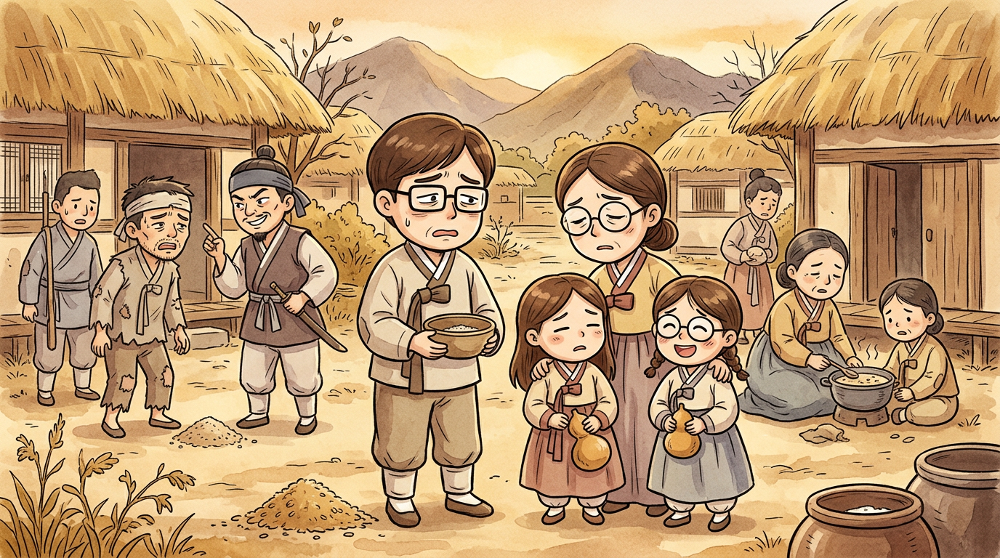
삼정의 문란으로 고통받는 백성들
백성들의 고통은 상상을 초월했어요. 세금을 내지 못하면 매를 맞거나 감옥에 갇혔어요. 많은 농민들이 살던 땅을 버리고 유민(떠돌이)이 되거나, 산속으로 도망갔답니다. 세금을 피해 도망간 사람의 세금은 마을에 남은 이웃에게 떠넘겨졌어요. 그러면 그 이웃도 견디다 못해 도망가고... 이런 악순환이 반복되었답니다.
1811년, 평안도에서 큰 반란이 일어났어요. 홍경래의 난이에요.
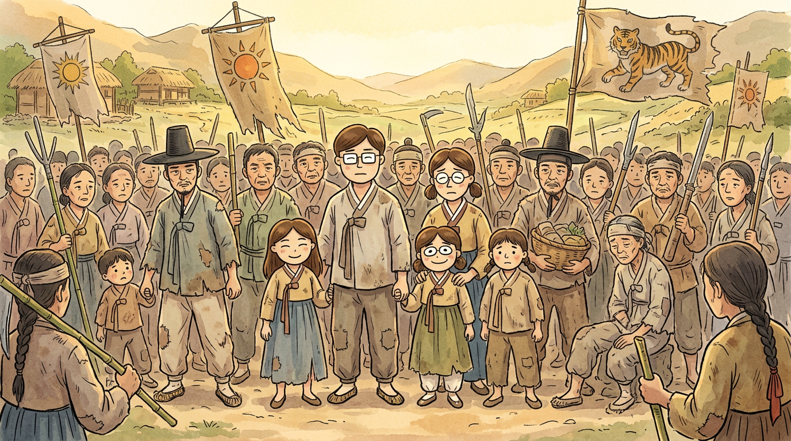
홍경래의 난 - 평안도 백성들의 분노가 폭발하다
홍경래는 평안도 출신의 몰락한 양반이었어요. 당시 평안도(서북 지방) 사람들은 아무리 능력이 뛰어나도 중앙 관직에 오를 수 없는 지역 차별을 당하고 있었어요.
홍경래는 농민, 상인, 광부 등을 모아 봉기를 일으켰어요. 처음에는 여러 고을을 점령하며 세력을 키웠지만, 결국 정주성에서 관군에 포위되어 5개월간의 치열한 전투 끝에 진압되었답니다.
홍경래의 난은 비록 실패했지만, 세도정치의 부패와 지역 차별에 맞선 첫 번째 큰 저항이었어요. 이후 전국 각지에서 비슷한 민란이 잇따르는 신호탄이 되었답니다.
1862년, 경상도 진주에서 큰 민란이 일어났어요. 진주의 탐관오리 백낙신이 너무나 심하게 세금을 걷자, 참다못한 백성들이 들고일어난 거예요.
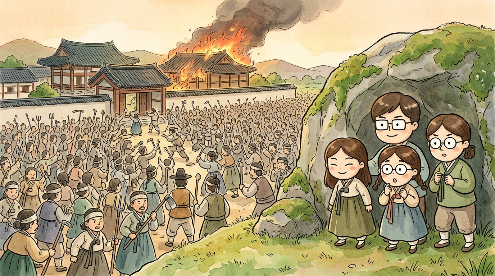
진주민란 - 전국으로 퍼진 백성들의 저항
유계춘 등 농민 지도자들이 수천 명의 농민을 이끌고 진주성에 들이닥쳤어요. 탐관오리의 집을 부수고, 부당하게 빼앗긴 곡식을 되찾았답니다.
진주민란의 불길은 순식간에 전국으로 번졌어요. 같은 해에 전국 37개 지역에서 민란이 일어났답니다! 이것은 조선의 지배 체제가 완전히 무너지고 있다는 신호였어요.
철종은 원래 왕이 될 사람이 아니었어요. 강화도에서 농사를 짓던 왕족이었는데, 세도 가문인 안동 김씨가 자기들 마음대로 다룰 수 있는 사람을 왕으로 세운 거예요. 그래서 철종을 "강화도령"이라 불렀답니다. 농사짓던 사람이 하루아침에 왕이 된 거예요!
삼정의 문란 중 죽은 사람에게 세금을 매기는 '백골징포'가 있었어요. 이렇게 말도 안 되는 일이 왜 가능했을까요? 부패를 막으려면 어떤 장치가 필요할까요?
세도정치 시기에는 돈으로 관직을 샀어요(매관매직). 이런 부패가 왜 나라 전체를 망하게 하는지 단계별로 설명해 보세요.
매관매직의 부패는 연쇄적으로 퍼져요. 1단계: 돈 주고 관직을 산다. 2단계: 투자한 돈을 되찾기 위해 백성에게 더 많은 세금을 걷는다. 3단계: 백성이 고통받아 도망가거나 반란을 일으킨다. 4단계: 세금이 줄어 나라 재정이 악화된다. 5단계: 나라의 힘이 약해져 외세의 침략에 대응하지 못한다. 이처럼 한 곳의 부패가 나라 전체를 무너뜨릴 수 있어요.
홍경래의 난은 지역 차별에 대한 저항이기도 했어요. 오늘날에도 지역, 성별, 외모 등으로 차별하는 경우가 있나요? 차별이 없는 사회를 만들려면 어떻게 해야 할까요?
안타깝게도 오늘날에도 다양한 차별이 존재해요. 출신 지역, 성별, 장애, 외모, 인종 등을 이유로 불공정한 대우를 받는 경우가 있답니다. 차별을 없애려면, 먼저 '나도 모르게 편견을 가지고 있지는 않은가?' 스스로 돌아보는 것이 중요해요. 그리고 차별받는 사람의 입장에서 생각해 보고, 잘못된 것을 보면 용기 있게 말하는 것이 필요해요.
민란에 참여한 백성들은 '나쁜 관리'를 공격했지, '왕'이나 '나라'를 부정하지는 않았어요. 이것은 무엇을 의미할까요?
백성들은 나라의 제도 자체가 나쁘다고 생각한 것이 아니라, 그 제도를 악용하는 관리들이 문제라고 생각했어요. '왕은 좋은 분인데 중간의 관리가 나쁘다'는 인식이 있었답니다. 하지만 시간이 지나면서 점점 '제도 자체를 바꿔야 한다'는 생각이 싹트기 시작했어요. 이것이 나중에 동학농민운동으로 이어지게 됩니다.
1863년, 왕실의 먼 친척이던 고종이 12살의 나이로 왕이 되었어요. 어린 왕 대신 아버지 흥선대원군 이하응이 나라를 다스리게 되었답니다.
흥선대원군은 세도정치로 엉망이 된 나라를 바로잡기 위해 강력한 개혁을 시작했어요.
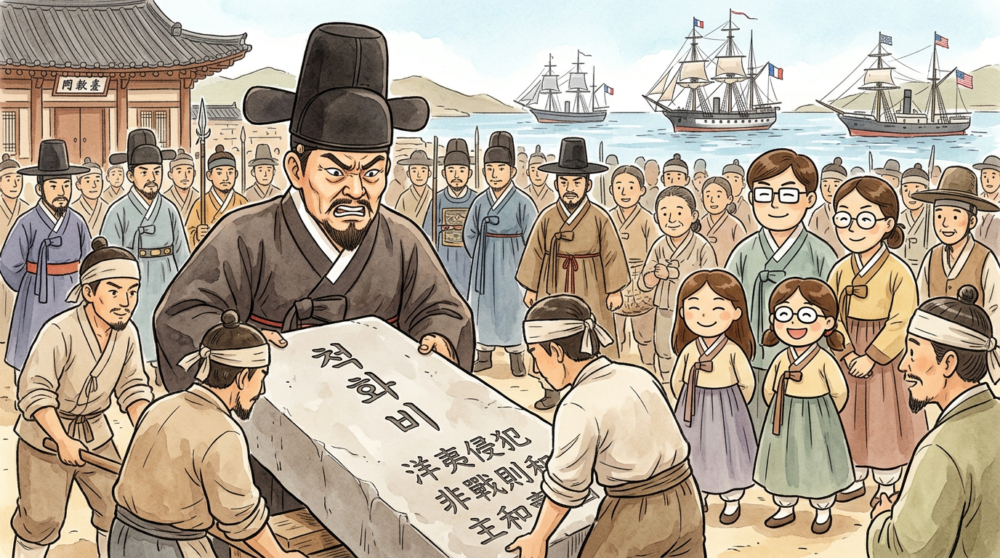
흥선대원군 - 강력한 개혁과 쇄국정책
세도정치 타파: 안동 김씨 등 세도 가문의 권력을 빼앗고, 능력 있는 사람을 당파에 관계없이 등용했어요.
서원 철폐: 전국에 수백 개나 되던 서원(양반의 사설 학교)을 47개만 남기고 모두 없앴어요. 서원이 세금도 안 내고 양반들의 권력 기지가 되었기 때문이에요.
경복궁 중건: 임진왜란 때 불탄 경복궁을 다시 지어 왕실의 위엄을 세우려 했어요.
삼정 개혁: 양반에게도 군포를 걷는 호포제를 실시하여 세금 부담을 공평하게 했어요.
하지만 경복궁 중건에는 문제가 있었어요. 엄청난 돈이 필요했기 때문에 백성들에게 기부금을 강제로 걷고, 당백전이라는 가치 없는 화폐를 만들어 물가가 폭등하는 부작용이 생겼답니다.
이 무렵 세계는 빠르게 변하고 있었어요. 서양의 나라들(프랑스, 영국, 미국 등)이 강력한 군사력과 발달된 기술을 앞세워 아시아 각국의 문을 두드리고 있었거든요.
중국은 아편전쟁(1840~1842)에서 영국에 졌고, 일본은 1853년 미국의 페리 제독이 강제로 문을 열게 했어요. 이제 조선 차례가 다가오고 있었답니다.
흥선대원군은 이런 외세에 대해 "절대로 문을 열지 않겠다!"는 강경한 입장을 취했어요. 이것이 쇄국정책이에요.
1866년, 프랑스 군함이 강화도에 쳐들어왔어요. 이것이 병인양요예요.
원인은 이러했어요. 흥선대원군이 조선에서 활동하던 프랑스 선교사 9명과 천주교 신자 수천 명을 처형한 병인박해를 일으켰어요. 이에 프랑스가 보복으로 군대를 보낸 거예요.
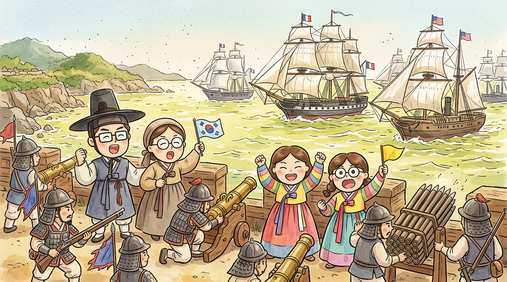
병인양요와 신미양요 - 서양 군함이 조선에 오다
프랑스군은 강화도를 점령하고 외규장각의 소중한 의궤(왕실 기록)를 약탈해 갔어요. 하지만 양헌수 장군이 이끄는 조선군이 정족산성에서 프랑스군을 물리쳤답니다. 프랑스군은 물러갔지만, 약탈한 문화재는 가져갔어요. (이 의궤는 2011년에야 한국에 돌아왔답니다!)
1871년에는 미국 함대가 강화도에 나타났어요. 이것이 신미양요예요.
미국은 통상(무역)을 요구하며 무력시위를 벌였어요. 강화도의 광성보에서 치열한 전투가 벌어졌는데, 조선군 어재연 장군이 이끄는 수비대는 끝까지 싸우다가 거의 전멸했어요.
미국군은 전투에서 이겼지만, 조선이 끝까지 문을 열지 않자 결국 물러갔어요. 흥선대원군은 승리감에 차서 전국에 척화비를 세웠어요.
"서양 오랑캐가 침범하는데 싸우지 않으면 화친하는 것이요, 화친을 주장하는 것은 나라를 파는 것이다!"
광성보 전투에서 어재연 장군의 수(帥)자 깃발을 미국군이 빼앗아 갔어요. 이 깃발은 미국 해군사관학교 박물관에 보관되어 있다가, 2007년에 장기 대여 형식으로 한국에 돌아왔답니다. 136년 만의 귀환이었어요!
흥선대원군이 물러나고 고종이 직접 정치를 하게 되면서, 왕비 명성황후(민비)의 세력이 커졌어요. 이들은 대원군과 달리 외국과의 교류에 더 개방적이었답니다.
1875년, 일본 군함 운요호가 강화도 앞바다에 나타나 도발을 했어요. 조선군이 대포를 쏘자, 일본은 이를 빌미로 군사적 압력을 가했어요.
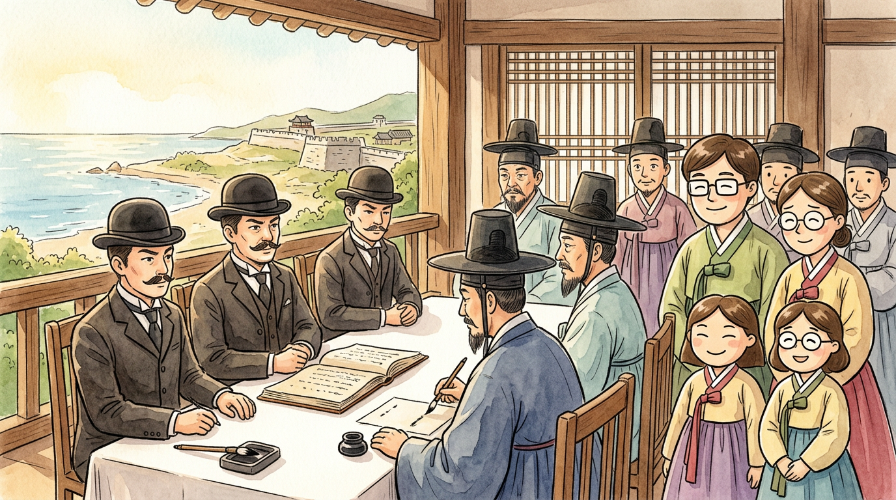
강화도 조약 - 일본에 의한 불평등 조약 체결
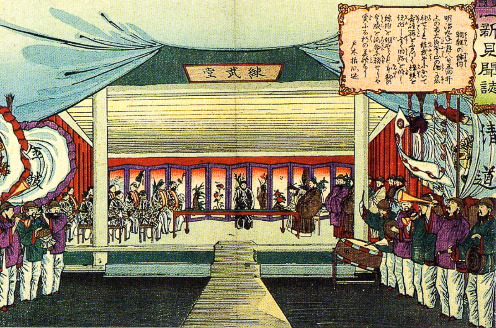
강화도 조약 원문 (1876) — 조선이 처음으로 나라의 문을 연 조약 문서 (출처: Wikimedia Commons)
1876년, 조선은 일본과 강화도 조약(조일수호조규)을 맺었어요. 이것은 조선이 외국과 맺은 최초의 근대적 조약이에요. 하지만 심각한 불평등 조약이었답니다.
부산, 원산, 인천 세 항구를 열어야 했어요.
일본인이 조선에서 죄를 지어도 조선 법으로 처벌할 수 없었어요. (치외법권)
일본 상품에 관세(세금)를 매길 수 없었어요. 조선의 상인들은 값싼 일본 상품에 큰 타격을 받았답니다.
"조선은 자주 독립국"이라는 조항은, 사실 조선에 대한 청나라의 영향력을 차단하려는 일본의 계략이었어요.
나라 안팎으로 어려운 상황에서, 백성들의 고통은 극에 달했어요. 그때 백성들에게 희망이 된 것이 동학(東學)이에요.
동학은 최제우가 창시한 종교로, "사람이 곧 하늘이다(인내천)"라는 가르침을 펼쳤어요. 모든 사람은 평등하고, 서양(서학=천주교)에 맞서 우리 것을 지키자는 것이 핵심이었답니다.
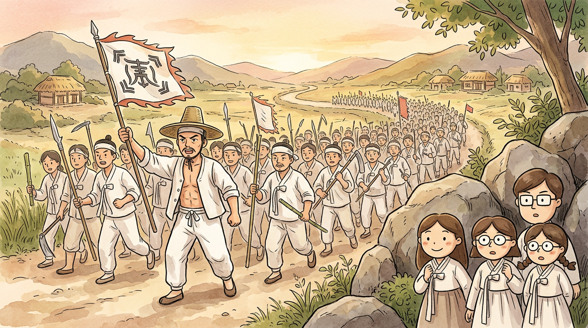
동학농민운동 - 전봉준이 이끈 농민들의 함성
1894년, 전라도 고부에서 탐관오리 조병갑의 횡포에 분노한 농민들이 봉기를 일으켰어요. 이 봉기를 이끈 사람이 바로 전봉준이에요. 키가 작아서 "녹두장군"이라 불렸답니다.
전봉준이 이끄는 동학 농민군은 파죽지세로 진격하여 전주성을 점령했어요! 농민군은 두 가지를 외쳤답니다.
반봉건: "탐관오리를 몰아내고, 노비 문서를 불태우고, 토지를 공평하게 나누자!"
반외세: "일본과 서양 세력을 몰아내고 나라를 지키자!"
동학 농민군은 정부와 전주화약을 맺고, 개혁안을 내놓았어요.
- 노비 문서를 소각할 것
- 천민의 대우를 개선할 것
- 토지를 공평하게 분배할 것
- 부정한 관리를 처벌할 것
- 일본과 내통하는 자를 처벌할 것
이것은 조선 백성이 직접 만든 최초의 민주적 개혁안이라 할 수 있어요!
하지만 정부가 청나라에 도움을 요청하자, 일본도 군대를 보내왔어요. 농민군은 일본군의 현대식 무기 앞에 무참히 패배했고, 전봉준은 체포되어 처형되었어요.
전봉준은 죽기 전에 이렇게 말했답니다.
"나라를 위하고 백성을 편안하게 하려 했을 뿐이다."
흥선대원군은 서양과의 교류를 완전히 거부했어요. 만약 조선이 일찍 문을 열고 서양의 기술을 받아들였다면, 역사가 어떻게 달라졌을까요?
흥선대원군의 쇄국정책은 나라를 지키려는 것이었지만, 결과적으로 조선이 세계 변화에 뒤처지게 만들었어요. '변화를 거부하는 것'과 '변화를 받아들이는 것' 중 어떤 것이 현명할까요?
완전히 거부하는 것도, 무조건 받아들이는 것도 좋지 않아요. 가장 현명한 것은 우리의 것을 지키면서도 좋은 것은 배우는 거예요. 일본은 서양 기술을 빠르게 받아들이면서(메이지 유신) 강해졌지만, 조선은 문을 닫고 있다가 결국 강제로 문을 열게 되었어요. 변화를 두려워하기보다 주체적으로 변화를 이끄는 것이 중요하답니다.
동학농민운동의 '인내천(사람이 곧 하늘)' 사상은 모든 사람의 평등을 주장했어요. 오늘날 민주주의의 기본 원리와 어떤 점이 비슷한가요?
인내천 사상은 '모든 사람은 하늘처럼 존귀하다'는 뜻으로, 오늘날 민주주의의 '모든 사람은 동등한 권리를 가진다'는 원리와 매우 비슷해요. 신분, 재산, 성별에 관계없이 모든 사람이 동등하다는 생각은 당시로서는 매우 혁명적이었어요. 동학농민운동은 한국 민주주의의 씨앗이라고 할 수 있답니다.
전봉준은 작은 키에 '녹두장군'이라 불렸지만, 수만 명의 농민을 이끈 위대한 지도자였어요. 진정한 리더에게 필요한 것은 무엇일까요?
진정한 리더는 겉모습이 아니라 용기, 정의감, 그리고 다른 사람을 위하는 마음에서 나와요. 전봉준은 키는 작았지만 백성의 고통을 외면하지 않는 용기와, 모두가 평등한 세상을 꿈꾸는 비전이 있었어요. 이것이 수만 명의 사람들이 그를 따른 이유예요. 리더는 앞에서 지시하는 사람이 아니라, 올바른 방향을 보여주고 함께 걸어가는 사람이랍니다.
1894년 청일전쟁에서 일본이 청나라를 이겼어요. 오랫동안 조선에 영향력을 행사하던 청나라의 힘이 약해지자, 고종은 이 기회를 놓치지 않았어요.
1895년, 일본은 끔찍한 만행을 저질렀어요. 일본 낭인들이 경복궁에 침입하여 명성황후(민비)를 시해한 거예요. 이것을 을미사변이라 해요. 한 나라의 왕비를 외국인이 궁궐에서 살해하다니, 이런 야만적인 일은 세계 역사에서도 유례를 찾기 힘든 사건이에요.
위험을 느낀 고종은 1896년 러시아 공사관으로 피신했어요(아관파천). 왕이 자기 궁궐도 아닌 외국 공관에서 1년간 머물러야 했으니, 이 또한 치욕적인 일이었답니다.
1897년, 고종은 러시아 공사관에서 돌아와 큰 결심을 했어요. 나라의 이름을 대한제국(大韓帝國)으로 바꾸고, 스스로 황제의 자리에 올랐답니다!
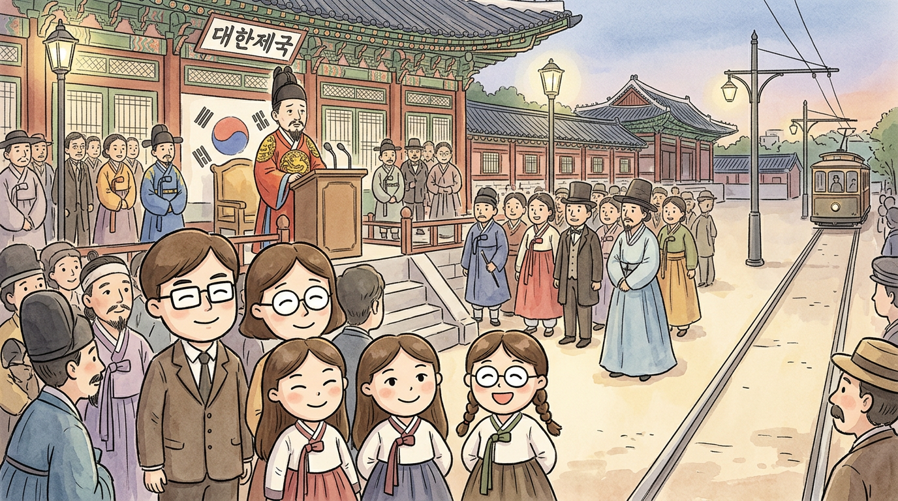
대한제국 선포 - 고종 황제와 환구단
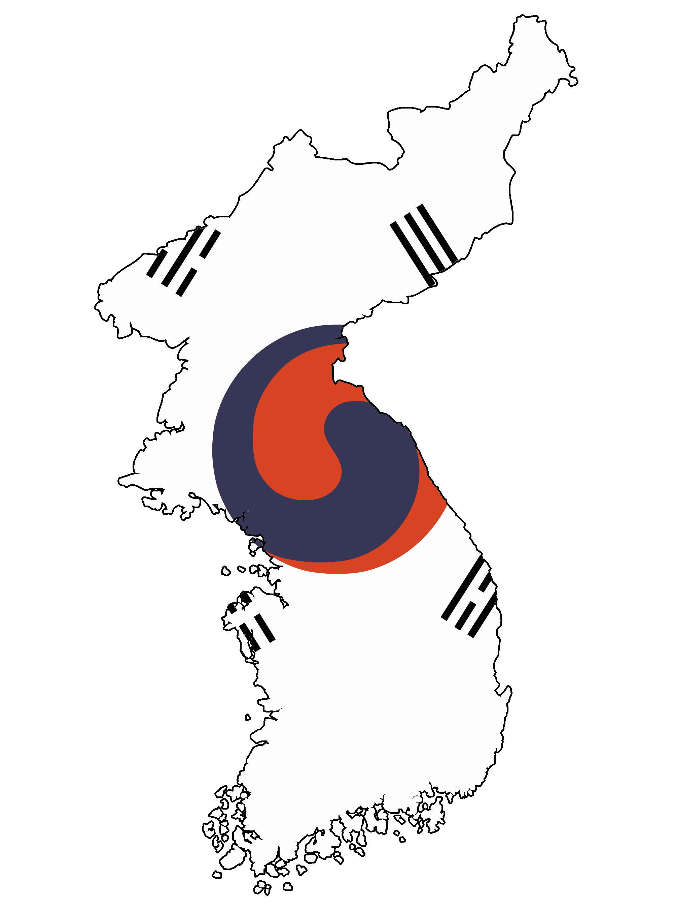
대한제국 지도 (1897~1910) — 황제의 나라로 선포된 대한제국 (출처: Wikimedia Commons)
대한제국(大韓帝國): 1897년 고종이 선포한 나라 이름. '왕의 나라'에서 '황제의 나라'로 격을 높인 것이에요.
광무개혁(光武改革): 대한제국 시기 추진한 근대화 개혁. 연호 '광무'에서 따온 이름이에요.
을사늑약(乙巳勒約): 1905년 일본이 강제로 맺게 한 조약. '늑약'은 '강제로 맺은 조약'이라는 뜻이에요.
고종은 환구단(하늘에 제사 지내는 곳)을 짓고, 그곳에서 황제 즉위식을 거행했어요. "우리는 더 이상 다른 나라에 종속된 나라가 아니라, 독립된 황제국이다!"라는 선언이었답니다.
대한제국은 광무개혁을 추진했어요. 전차, 전화, 전등 같은 근대 문물을 도입하고, 학교를 세우고, 군대를 근대식으로 바꾸려 했어요. 하지만 개혁의 시간은 너무 짧았답니다.
1904년 러일전쟁에서 일본이 러시아마저 이기자, 동아시아에서 일본의 힘은 걷잡을 수 없이 커졌어요.
1905년, 일본은 대한제국의 외교권을 빼앗기 위해 을사늑약(을사조약)을 강제로 맺으려 했어요. 일본의 특사 이토 히로부미가 일본군을 이끌고 와서 대신들을 협박한 거예요.
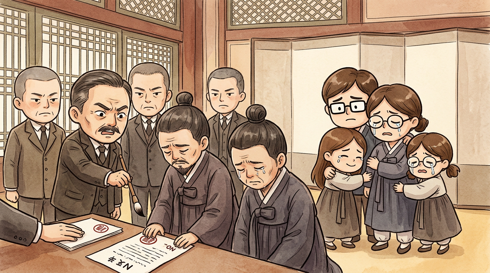
을사늑약 - 나라의 외교권을 빼앗기다
5명의 대신이 일본의 압력에 굴복하여 조약에 찬성했어요. 이들을 을사오적(乙巳五賊)이라 부르며 지금까지도 매국노로 기억하고 있답니다.
고종 황제: 조약에 서명하지 않았고, 비밀리에 외국에 도움을 요청했어요.
민영환: "2천만 동포에게 고함"이라는 유서를 남기고 자결했어요. "나라를 지키지 못한 죄를 죽음으로 갚겠다"며.
장지연: 황성신문에 "시일야방성대곡(이날 목 놓아 크게 울다)"이라는 사설을 써서 온 국민을 울게 했어요.
헤이그 특사: 1907년 고종은 네덜란드 헤이그 만국평화회의에 이상설, 이준, 이위종 세 특사를 비밀리에 보내 을사늑약의 부당함을 세계에 알리려 했어요. 하지만 일본의 방해로 회의장에 들어가지 못했고, 이준 열사는 분을 이기지 못해 그곳에서 순국했답니다.
일본은 헤이그 특사 사건을 구실로 고종을 강제로 퇴위시키고, 아들 순종을 왕으로 앉혔어요. 그리고 대한제국의 군대마저 강제로 해산시켰답니다.
1909년 10월 26일, 중국 하얼빈 기차역에서 총소리가 울렸어요. 안중근 의사가 을사늑약의 원흉 이토 히로부미를 저격한 거예요!
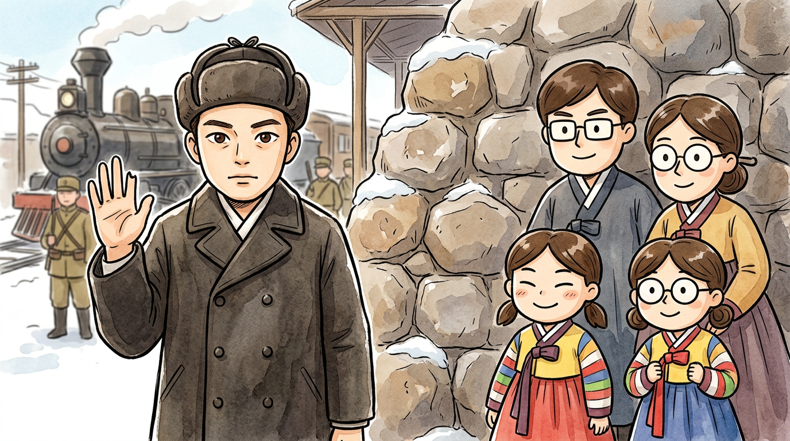
안중근 의사 - 하얼빈 역에서의 의거
안중근은 이토 히로부미를 쏜 뒤, 러시아어로 "코레아 우라!(대한 만세!)"를 외쳤어요.
체포된 안중근은 재판에서 당당하게 이토 히로부미의 15가지 죄목을 밝혔어요.
1. 명성황후를 시해한 죄
2. 고종 황제를 폐위시킨 죄
3. 을사늑약과 정미조약을 강제로 맺은 죄
4. 무고한 한국인을 학살한 죄
5. 한국의 군대를 강제 해산시킨 죄
6. 동양의 평화를 깨뜨린 죄
안중근은 감옥에서도 "동양평화론"이라는 글을 써서, 한국, 중국, 일본이 평화롭게 공존하는 세상을 꿈꿨어요. 그는 단순한 복수가 아니라, 동양의 평화를 위해 행동한 것이었답니다.
1910년 3월, 안중근은 31세의 나이로 뤼순 감옥에서 순국했어요. 마지막 유언은 이것이었답니다.
"내가 한국 독립을 위해 목숨을 바쳤으니, 한국 동포들은 마음을 합하여 독립의 기초를 견고히 세워라."
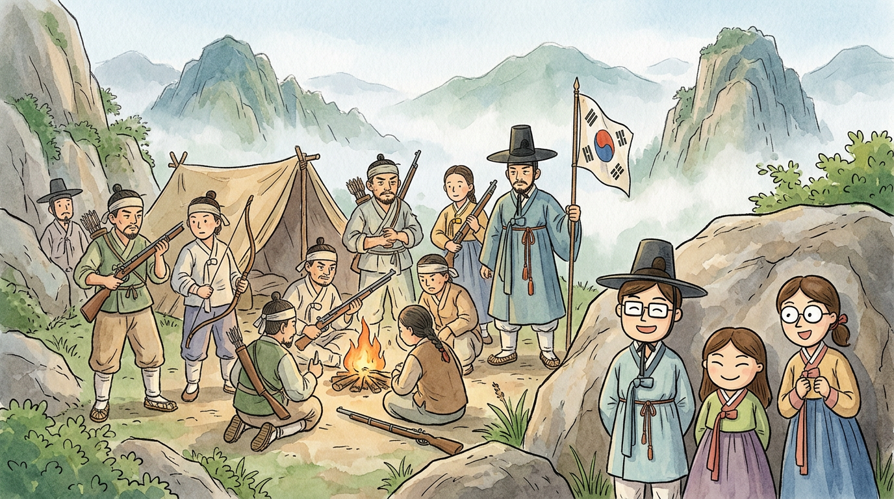
의병 운동 - 나라를 지키기 위해 일어선 백성들
을사늑약과 군대 해산에 분노한 사람들이 전국에서 의병을 일으켰어요. 의병은 정규 군대가 아닌 백성들이 스스로 무기를 들고 일어난 군대예요.
해산된 군인들도 의병에 합류하면서 전투력이 크게 강해졌어요. 1907~1908년에는 전국에서 수만 명의 의병이 일본군과 싸웠답니다. 특히 13도 창의군은 서울 진공 작전까지 시도했어요!
한편, 무력이 아닌 교육과 언론으로 나라를 지키려는 애국계몽운동도 활발했어요.
신민회: 안창호, 이승훈 등이 만든 비밀 단체. 교육, 산업을 일으켜 실력을 기른 뒤 독립하자는 운동을 펼쳤어요.
대한매일신보: 영국인 베델이 발행한 신문으로, 일제의 침략을 거침없이 비판했어요.
국채보상운동: "나라의 빚을 국민이 갚자!" 온 국민이 담배를 끊고 금반지를 모아 일본에 진 빚을 갚으려 했어요.
학교 설립: 전국에 수천 개의 사립학교가 세워져 민족 교육을 실시했어요.
안중근 의사는 손가락이 한 마디 잘려 있었어요. 동지들과 함께 독립을 위해 싸우겠다는 맹세로 왼손 약지 끝마디를 잘라 단지동맹을 한 거예요. 잘린 손가락으로 태극기에 "대한독립"이라고 쓴 혈서를 남겼답니다.
나라가 위기에 처했을 때, 의병처럼 무력으로 싸우는 방법과 애국계몽운동처럼 교육과 실력으로 대응하는 방법이 있었어요. 어떤 방법이 더 효과적이었을까요?
안중근 의사는 '동양평화론'에서 한중일 세 나라의 평화로운 공존을 꿈꿨어요. 이웃 나라와 평화롭게 지내려면 무엇이 필요할까요?
안중근은 일본의 침략에 맞서 싸우면서도, 진정한 목표는 동양의 평화라고 했어요. 이웃 나라와 평화롭게 지내려면 서로를 존중하고, 역사를 정직하게 기억하고, 불의에는 단호하게 대응하되 대화의 문은 열어두어야 해요. 과거의 아픔을 잊지 않되 미래를 함께 만들어가는 지혜가 필요하답니다.
민영환은 나라를 지키지 못한 책임을 지고 스스로 목숨을 끊었어요. 책임감이란 무엇이며, 우리 생활에서 책임감을 보여줄 수 있는 방법은 무엇일까요?
민영환의 자결은 극단적이지만, 그만큼 나라에 대한 책임감이 컸다는 뜻이에요. 책임감이란 자기가 맡은 일이나 자기가 속한 공동체에 대해 끝까지 최선을 다하는 마음이에요. 우리 생활에서는 숙제를 제때 하는 것, 약속을 지키는 것, 잘못했을 때 솔직히 인정하는 것이 모두 책임감의 표현이에요. 작은 책임부터 잘 지키는 사람이 나중에 큰 책임도 잘 감당할 수 있답니다.
국채보상운동은 온 국민이 힘을 모아 나라의 빚을 갚으려 한 운동이에요. 모든 국민이 힘을 합치면 어떤 일을 이룰 수 있을까요? 비슷한 예를 찾아보세요.
국민이 힘을 합치면 불가능해 보이는 일도 가능해져요. 국채보상운동처럼, 1997년 외환위기(IMF) 때 국민들이 금을 모은 '금 모으기 운동'도 비슷한 사례예요. 또 2002년 월드컵 때 붉은악마 응원도 국민이 하나로 뭉친 예이고, 코로나 때 사회적 거리두기도 모두가 협력한 결과예요. 한 사람의 힘은 작지만, 모이면 세상을 바꿀 수 있답니다.
1910년 8월 29일, 한민족 역사상 가장 슬프고 치욕적인 날이 찾아왔어요. 일본이 대한제국을 완전히 집어삼킨 경술국치(庚戌國恥), 즉 한일병합이 이루어진 거예요.
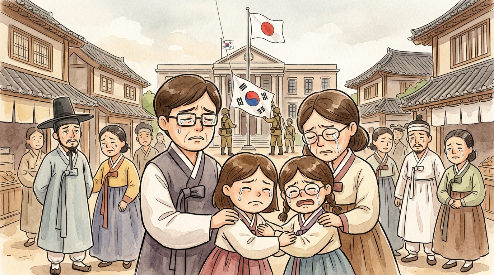
경술국치 - 1910년, 나라를 빼앗기다
일본은 이미 을사늑약(1905)으로 외교권을, 정미조약(1907)으로 군대를 빼앗고, 통감부를 설치하여 내정까지 장악하고 있었어요. 한일병합은 이런 과정의 마지막 단계였답니다.
한일병합 조약은 총리대신 이완용이 서명했어요. 이완용은 을사오적에 이어 한일병합에도 앞장선 대표적인 매국노로, 지금까지도 한국인이 가장 미워하는 역사 인물 중 하나랍니다.
이렇게 519년간 이어온 조선(대한제국)은 역사 속으로 사라지고, 한반도는 일본의 식민지가 되었어요. 우리 민족은 나라 없는 백성, 망국민이 된 거예요.
경술국치 소식을 들은 많은 사람들이 통곡했어요.
매천 황현은 "나는 죽어서도 이 나라의 백성이 되겠다"는 절명시(죽음을 앞두고 쓴 시)를 남기고 스스로 목숨을 끊었어요.
이범진 전 러시아 공사는 멀리 러시아에서 나라 잃은 소식을 듣고 자결했어요.
전국의 수많은 선비와 의병장들이 울분을 참지 못하고 스스로 목숨을 끊거나 끝까지 싸우다 전사했답니다.
일본은 대한제국을 병합한 뒤 조선총독부를 설치하고 식민 통치를 시작했어요. 조선총독은 일본 육군 대장이 맡았는데, 입법, 행정, 사법 모든 권한을 가진 사실상의 독재자였답니다.
일제는 처음부터 가혹한 무단통치(武斷統治)를 실시했어요.
헌병 경찰 통치: 군인(헌병)이 경찰 역할까지 하며 한국인을 감시하고 탄압했어요.
언론 탄압: 한국어 신문을 폐간시키고, 집회와 결사(모임)의 자유를 빼앗았어요.
토지 조사 사업: 한국인의 토지를 조사한다며, 신고하지 못한 많은 땅을 빼앗아 일본인에게 넘겼어요.
교육 탄압: 한국 역사와 한국어 교육을 제한하고, 일본어와 일본 역사를 가르쳤어요.
태형(笞刑): 한국인에게만 적용되는 매질 형벌을 부활시켰어요. 일본인에게는 적용하지 않았답니다.
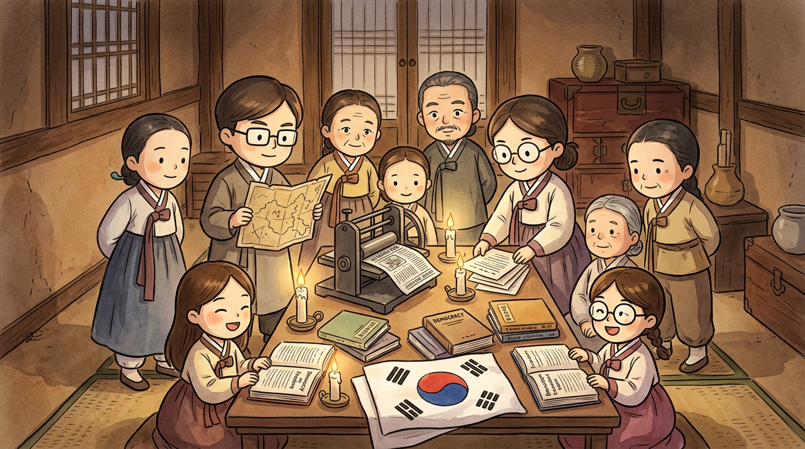
독립을 향한 씨앗 - 비밀결사와 교육운동
나라를 빼앗겼지만, 한민족은 결코 포기하지 않았어요! 겉으로는 일제의 통치를 받았지만, 안으로는 독립을 준비하는 불씨가 꺼지지 않았답니다.
비밀결사 운동: 신민회, 독립의군부, 대한광복회 등 비밀 단체들이 독립운동을 이어갔어요.
교육 운동: 일제의 탄압 속에서도 민족 교육을 계속하여 민족정신을 지켰어요.
해외 독립운동 기지: 만주, 연해주, 미국 등 해외에 독립운동 기지를 세우고 군사 훈련을 실시했어요. 신흥무관학교가 대표적이에요.
종교계의 저항: 천도교, 기독교, 불교 등 종교 지도자들이 민족운동의 중심이 되었어요.
민족 문화 수호: 주시경 선생 등이 한글 연구와 보급에 힘써 우리 말과 글을 지켰어요.
이런 독립의 씨앗들은 마침내 1919년, 한민족 최대의 독립운동인 3.1운동으로 꽃피게 돼요.
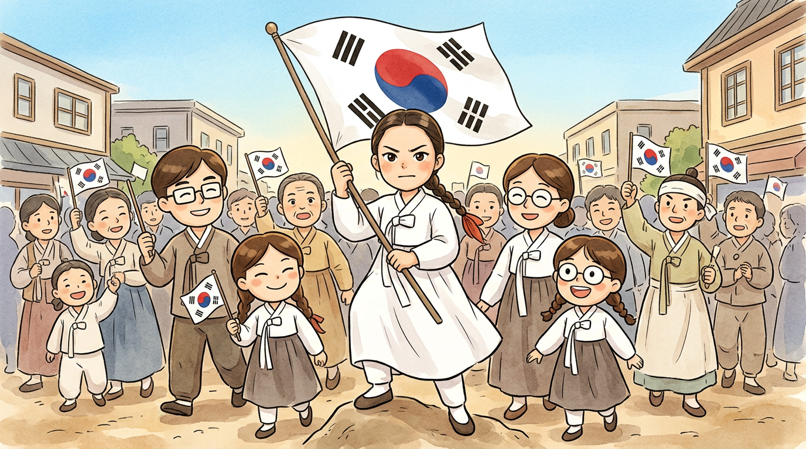
유관순 - 대한 독립 만세를 외치다
1919년 3월 1일, 서울 탑골공원에서 독립선언서가 낭독되었어요. "우리는 이에 우리 조선이 독립한 나라임과 조선 사람이 자주적인 민족임을 선언한다!"
이 함성은 순식간에 전국으로 퍼져, 약 200만 명이 참여한 거대한 만세 운동이 되었어요!
이때 충청도 천안의 16살 소녀 유관순은 고향에서 만세 운동을 이끌었어요. 유관순은 체포되어 감옥에서도 "대한 독립 만세!"를 외치다가, 일제의 혹독한 고문 끝에 17살의 어린 나이로 순국했답니다.
3.1운동의 독립선언서에는 민족 대표 33인이 서명했어요. 천도교 15인, 기독교 16인, 불교 2인으로 구성되었답니다. 또 3.1운동은 중국의 5.4운동, 인도의 독립운동 등 아시아 다른 나라의 독립운동에도 큰 영향을 주었어요. 우리의 독립 의지가 세계를 감동시킨 거예요!
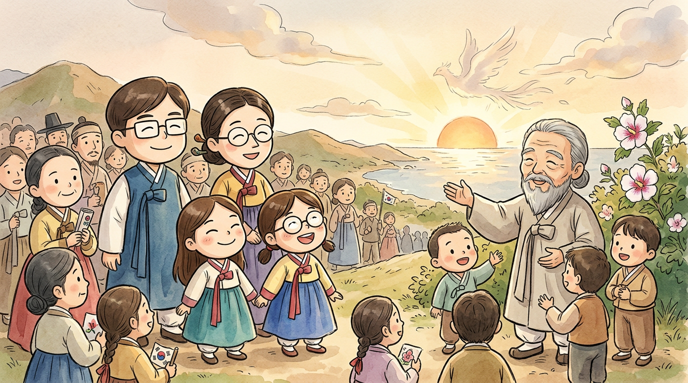
우리 역사는 계속된다 - 희망의 빛
1910년 나라를 잃었지만, 한민족의 이야기는 여기서 끝나지 않아요. 오히려 여기서부터 더 위대한 이야기가 시작되었답니다.
3.1운동 이후 중국 상하이에 대한민국 임시정부가 세워졌어요. 김구, 이승만 등 독립 지도자들이 나라 밖에서 독립을 위해 싸웠답니다.
만주와 연해주에서는 독립군이 일본군과 맞서 싸워 봉오동 전투, 청산리 전투 같은 빛나는 승리를 거두었어요.
윤봉길, 이봉창 같은 의사들은 목숨을 바쳐 독립 의지를 세계에 알렸어요.
그리고 마침내 1945년 8월 15일, 35년간의 일제 식민지 시대가 끝나고 광복(나라를 되찾음)을 맞이했답니다!
첫째, 나라의 힘을 키우는 것이 중요해요. 조선이 나라를 잃은 것은 국력이 약했기 때문이에요.
둘째, 변화에 적응해야 해요. 세계가 변할 때 문을 닫고 있으면 뒤처지게 됩니다.
셋째, 국민이 하나로 뭉치면 어떤 어려움도 이겨낼 수 있어요. 3.1운동이 그 증거예요.
넷째, 포기하지 않으면 반드시 길이 열려요. 35년간의 어둠 끝에 광복이 찾아왔듯이.
여러분이 배운 조선 후기~대한제국의 역사는 슬프고 아픈 이야기가 많아요. 하지만 그 속에는 나라를 지키려던 수많은 영웅들의 용기와 희생이 있었답니다. 효종의 북벌 의지, 영조와 정조의 개혁 정신, 실학자들의 지혜, 전봉준의 정의감, 안중근의 평화 사랑, 유관순의 용기... 이 모든 것이 오늘의 대한민국을 만든 뿌리예요.
역사를 아는 사람은, 더 나은 미래를 만들 수 있어요.
나라를 빼앗긴 뒤에도 독립을 포기하지 않은 한민족의 정신은 어디에서 나왔을까요? 오늘날 우리가 이 역사에서 배울 수 있는 가장 중요한 교훈은 무엇일까요?
나라를 잃은 뒤에도 독립운동가들은 포기하지 않았어요. 무엇이 그들에게 포기하지 않는 힘을 주었을까요? 여러분이 힘들 때 포기하지 않는 방법은 무엇인가요?
독립운동가들의 힘은 '나라와 민족에 대한 사랑'에서 나왔어요. 자기 한 사람의 편안함보다 모든 국민의 자유가 더 중요하다고 생각했기 때문이에요. 우리도 힘들 때 '왜 이것을 하는가'를 떠올리면 힘을 낼 수 있어요. 가족을 위해, 꿈을 위해, 또는 더 나은 세상을 위해 노력한다는 마음이 포기하지 않는 힘이 된답니다.
역사를 배우는 것이 왜 중요한지, 이 책에서 배운 내용을 바탕으로 설명해 보세요.
역사를 배우면 같은 실수를 반복하지 않을 수 있어요. 세도정치의 부패가 어떤 결과를 가져왔는지 알면, 오늘날 부패를 경계할 수 있어요. 쇄국정책이 어떤 결과를 가져왔는지 알면, 변화에 적응하는 것이 중요하다는 것을 배울 수 있어요. 또 역사 속 영웅들의 용기와 지혜에서 교훈을 얻고, 우리 민족의 자부심을 가질 수 있답니다. '과거를 잊은 민족에게 미래는 없다'는 말이 바로 이런 뜻이에요.
이 책에서 가장 인상 깊었던 인물은 누구인가요? 그 인물에게서 배울 수 있는 점은 무엇인가요?
이것은 여러분 각자의 생각이 중요한 질문이에요. 효종의 결단력, 영조의 인내심, 정조의 인재 사랑, 정약용의 학문 열정, 전봉준의 정의감, 안중근의 평화 사랑, 유관순의 용기 등 모든 인물에게 배울 점이 있어요. 어떤 인물에 마음이 끌리든, 그 인물이 보여준 가치(용기, 정의, 지혜, 사랑 등)를 자기 삶에서 실천해 보는 것이 역사 공부의 진짜 의미랍니다.
| 왕 | 재위 기간 | 주요 업적 | 핵심 키워드 |
|---|---|---|---|
| 효종 | 1649~1659 | 북벌론 추진, 군사 강화, 나선정벌 | 북벌, 치욕 극복 |
| 영조 | 1724~1776 | 탕평책, 균역법, 속대전 편찬 | 탕평, 52년 재위 |
| 정조 | 1776~1800 | 규장각, 수원 화성, 초계문신제 | 개혁, 인재 등용 |
| 순조 | 1800~1834 | (세도정치 시작) | 안동 김씨 세도 |
| 헌종 | 1834~1849 | (세도정치 계속) | 풍양 조씨 세도 |
| 철종 | 1849~1863 | (세도정치, 민란 빈발) | 강화도령 |
| 고종 | 1863~1907 | 대한제국 선포, 광무개혁 | 근대화, 국권 상실 |
| 사건 | 연도 | 상대국 | 결과 |
|---|---|---|---|
| 병인양요 | 1866 | 프랑스 | 정족산성 승리, 외규장각 약탈당함 |
| 신미양요 | 1871 | 미국 | 광성보 전투, 미국 철수, 척화비 건립 |
| 운요호 사건 | 1875 | 일본 | 일본의 도발, 강화도 조약의 빌미 |
| 강화도 조약 | 1876 | 일본 | 최초 근대 조약 (불평등) |
| 청일전쟁 | 1894 | 일본 vs 청 | 일본 승리, 청의 영향력 소멸 |
| 러일전쟁 | 1904 | 일본 vs 러시아 | 일본 승리, 한반도 지배권 확보 |
| 을사늑약 | 1905 | 일본 | 외교권 박탈 |
| 한일병합 | 1910 | 일본 | 국권 상실 |
| 인물 | 분야 | 대표 업적 | 명언/일화 |
|---|---|---|---|
| 효종 | 정치/군사 | 북벌 추진, 군사 강화 | 치욕을 갚겠다는 의지 |
| 송시열 | 학문/정치 | 북벌론 지지, 성리학 대가 | 대의명분의 수호자 |
| 영조 | 정치/개혁 | 탕평책, 균역법 | 52년 재위, 탕평채 |
| 정조 | 정치/문화 | 규장각, 수원 화성 | "나는 사도세자의 아들이다" |
| 정약용 | 학문/과학 | 거중기, 목민심서 등 500여 권 | 실학의 집대성자 |
| 박지원 | 문학/학문 | 열하일기, 허생전, 양반전 | 웃음 속 날카로운 비판 |
| 김정호 | 지리학 | 대동여지도 | 22년간의 집념 |
| 전봉준 | 민중운동 | 동학농민운동 | 녹두장군, 인내천 |
| 안중근 | 독립운동 | 이토 히로부미 저격 | 동양평화론, 단지동맹 |
| 유관순 | 독립운동 | 3.1운동 주도 | 16세 소녀의 용기 |